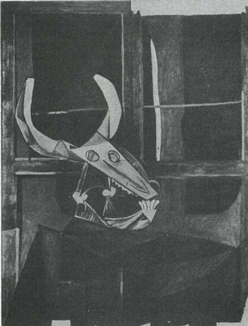
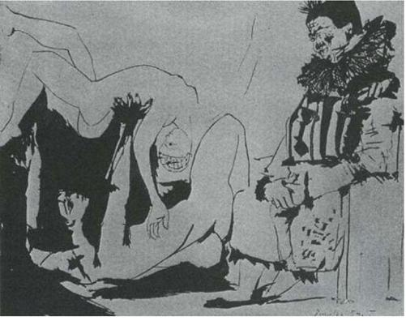

şimdi artık istediğini resmetmekte özgürdür. Yasak konu diye bir şey hemen hemen kalmamıştır; bugün herkes, bir meyve resminin, ölmekte olan bir kahraman resmi kadar önemli olabileceğini kabul etmeye hazırdır. Sanatçı için daha önce hiç bilinmeyen boyutlardaki bu özgürlüğün kazanılmasında Empresyonistler’in de başka herkes kadar payı vardır.
Bununla birlikte, bir sonraki kuşakta ressamlar konuyu bütünüyle bir yana atmaya ve soyut resimler yapmaya başladılar. Günümüzde yapılan resimlerin çoğu soyuttur.
Bu iki gelişme arasında bir bağıntı var mıdır? Sanatın soyuta kaymasının nedeni, sanatçının özgürlüğünden utanması mıdır? Herşeyin resmini yapmakta özgür olduğu için, neyi resmedeceğini bilememesi midir? Soyut sanatı savunanlar, ondan çoğunlukla en büyük özgürlüğün sanatı olarak söz ederler. Ama sakın, ıssız adadaki özgürlük olmasın bu?
Bu soruları doğru dürüst yanıtlamaya kalkmak çok uzun zaman alır. Bunların arasında bir bağıntı olduğuna inanıyorum ben. Soyut sanatın gelişmesini hazırlayan pek çok neden söz konusudur. Bunların arasında, her türlü konuya el atma imkânı olduğu için, sanatçıların konu seçme güçlüğünden kaçınma istekleri de vardır.
Bu sorunu şimdi gündeme getirmemin nedeni ressamın konu seçiminin ilk bakışta göründüğünden çok daha karmaşık bir şey olduğuna dikkat çekmek isteyişimdir. Konu, şövalenin karşısına yerleştirilen ya da ressamın aklına geliveren şeyle başlamaz. Ressamın şu ya da bu nedenle anlamlı bulduğu için resmini yapmaya karar verdiği şeyle başlar. Konu, sanatçının bir şeyi, ondan özellikle söz etmek üzere seçmesiyle başlar. (Bunu özel ya da anlamlı kılan, sanatçı için salt görsel bir yan —renk ya da biçim— olabilir.) Konu seçildikten sonra da resmin işlevi artık o seçimin önemini iletmek ve haklı göstermek olur.
Günümüzde sık sık konunun önemsiz olduğu söylenmiştir. Ama bu, on dokuzuncu yüzyılda konu sorununun aşırı sadık ve ahlakçı bir yaklaşımla yorumlanmasına karşı bir tepkidir. Aslında resim, tam anlamıyla konuyla başlar, konuyla biter. Resim bir seçmeyle başlar (dünyadaki başka herhangi bir şeyi değil de, bunu resmedeceğim); bu seçmenin haklı gösterilmesiyle de biter (şimdi, benim bunda ne görüp ne duyduğumu, bu şeyin nasıl yalnızca kendisi olmanın ötesine geçtiğini siz de görebilirsiniz).
Demek ki bir resmin başarılı olabilmesi için, ressamla yapıtını seyredenlerin neyin önemli olduğu üzerine anlaşmaya varmaları gerekir. Konu ressam ya da tek bir seyirci için kişisel anlam taşıyabilir; ne var ki ressamla seyircinin resmin genel anlamı üzerinde anlaşma imkânı da bulunmalıdır. İşte söz konusu toplumun ve dönemin kültürü sanatçıya ve onun sanatına bu noktada ağır basar. Rönesans sanatı Aztekler için hiçbir anlam taşımazdı —bunun tersi de doğrudur. (Eğer bugün birkaç entelektüel bu sanatların ikisini de bir ölçüde beğeniyorsa, bu onların kültürünün tarihsel bir kültür olmasındandır: Esin kaynağı tarih olan bir kültürdür bu; o nedenle günümüze kadar yer alan gelişmeleri, her bir ayrıntısında değilse bile, ilke olarak kapsar.)
Bir kültür güvenli ve kendi değerlerinden emin olunca, içinde yaşayan sanatçılara çeşitli konular sunar. Bu durumda neyin önemli olduğu konusundaki görüş birliği öyle sağlam bir temele dayanır ki, özgül bir konu önemini kabul ettirir ve gelenekselleşir. Örneğin bu, Çin'de kamış ve su, Rönesans'ta çıplak insan bedeni, Afrika'da hayvan başı konusunda geçerlidir. Üstelik bu gibi kültürlerde sanatçının kendi başına hareket etme imkânı pek yoktur: Sanatçı, özgül konuları işlemek üzere kullanılacaktır ve biraz önce anlatmaya çalıştığımız biçimiyle bu sorun onun aklına bile gelmeyecektir.
Bir kültür çözülme ya da geçiş durumundayken, sanatçının özgürlüğü artar —ama konu sorunu, sanatçı için çözülmesi zor bir duruma gelir: Sanatçı, toplum için kendisi bir seçme yapmak zorunda kalır. On dokuzuncu yüzyılda, Avrupa sanatında gittikçe çoğalan bunalımların temelinde bu yatıyordu. O dönemdeki sanat skandallarının ne kadar çoğunun konu seçiminden çıktığı hep unutulur (Géricault, Courbet, Daumier, Degas, Lautrec, Van Gogh, vb.).
On dokuzuncu yüzyılın sonuna gelindiğinde sanatçının, resmini yapacağı şeye karar verme, böylelikle toplum için seçme yapma zorluğunu aşmasının, kabaca iki yolu vardı. Sanatçı ya kendini halkla özdeşleştiriyor, böylece onların yaşamının kendisine bir konu dayatmasına izin veriyordu; ya da bir ressam olarak kendi içinde bulmak zorunda kalıyordu konusunu. Halk dediğimde, burjuvazi dışında kalan herkesi kastediyorum. Elbette pek çok ressam, onaylanmış konular listesine bakıp, burjuvaziye buna göre hizmet ediyordu; ama Salon'u ve Kraliyet Akademisi'ni yıllar yılı dolduran bu ressamların hepsi bugün unutulmuş; aşırı bağlılıkla hizmet ettikleri insanların ikiyüzlülüğünün kurbanı olmuşlardır.
Kendilerini halkla özdeşleştirenler (Van Gogh ya da Güney Denizleri'ndeki Gauguin) yeni konular bulmuşlar ve gördükleri kişilerin yaşamları ışığında eski konuları yenileştirmişlerdir. Van Gogh'un yaptığı bir manzara resmi, Poussin'in elinden çıkan bir manzara resminden bütünüyle bambaşka bir anlam (ve seçilme nedeni) taşır.
Konularını ressam olarak kendi içlerinde bulanlar (Seurat ya da Cézanne), resimlerindeki yeni konuyu görme yöntemini kendileri oluşturmaya çabaladılar. Cézanne örneğinde gördüğümüz gibi, bunu başardıkları ölçüde, sanatla doğa arasındaki ilişkiyi baştan sona değiştirdiler ve her seyircinin kendisini ressamın görüsüyle özdeşleştirmesini mümkün kıldılar.
Birinci çözümü benimseyenler, yollarına çoğunlukla kendi yalnızlıklarının yarattığı korkunç basıncın altında devam etmek zorunda kaldılar. "Ait olmak" istediklerinden toplumsal bakımdan bilinçlendiler. Toplumsal bilinç edinince de toplumu değiştirmek istediler. Onların politik olduklarını, konularını gelecekteki toplumun ölçütlerine göre seçtiklerini işte ancak bu anlamda söyleyebiliriz.
İkinci çözümü benimseyenler, yalıtlanmış kalmaya razı oldular. Kendilerini adadıkları şey, işlerinin mantığıydı. Amaçladıkları, imgelemlerini başka yaşamların taleplerine adamak değil, tersine bunu sanatları üzerinde gittikçe artan bir denetim kazanmak için kullanmaktı. Gelecekteki sanatın ölçütlerini yaratmak üzere —aynı zamanda kendi görme yöntemleri demek olan— yineleyip durdukları konuları seçtiler.
Hiçbir sanatçı yoktur ki bu iki kategoriden birine tıpı tıpına uysun. Çok karmaşık bir sorunu biraz aydınlatabilmek için bile bile şematik davranıyorum. Yüzyılımızın önemli sanatçıları da gene aşağı yukarı bu iki kategoriye bölünebilir: Görme yöntemleri, konularını aşanlar: Braque, Matisse, Dufy, de Staël vb; konu seçimleriyle, burjuvazininkinden farklı, başka (trajik ya da yüce) bir yaşama biçiminin bulunduğunu vurgulayanlar: Rouault, Léger, Chagall, Permeke vb.
Picasso bunların hangisindendir? Yanıtı kendisinden alalım:
Ben başkaları adına görürüm. Başka deyişle, bana kendini zorla kabul ettiren ani görüleri tuvale geçiririm. Tuvale ne koyacağımı önceden bilmem, hangi renkleri kullanacağıma ise hiç karar veremem. Çalışırken, tuvalde neyin resmini yaptığımın hiç farkında değilimdir. Yeni bir resme her başlayışımda kendimi boşluğa atıyormuşum gibi bir duyguya kapılırım. Ayaklarımın üstüne düşüp düşmeyeceğimi hiçbir zaman bilemem. Yaptığım şeyin etkisini değerlendirmeye ancak daha sonra başlayabilirim.
Picasso, bir görüye egemen olmaktan çok ona boyun eğiyor. Penrose da, Picasso'yu çalışırken görenlerin anlattıklarını yorumlarken aynı nokta üzerinde duruyor: "Çizgi, olması gereken yerde öyle bir kesinlikle beliriyor ki, sanki Picasso'nun zaten orada bulunan bir şeyle bütünleştiği duygusuna kapılıyorsunuz." Ruh çağıran bir medyum gibi, Picasso dile gelmek isteyen şeye boyun eğiyor. Kendisinin dışındaki bir esine bu ölçüde bağımlı işte. Kendini başkalarıyla özdeşleştirme gereksinmesi duyuyor.
Aslında beklenmesi gereken şey de budur. Sanat büyüye ne denli yakın olursa, sanatı besleyen toplumsal sistem ekonomik açıdan ne denli az gelişmiş olursa, sanatçının kendini başkaları için bir sözcü, bir kahin olarak algılaması da o denli olasıdır. Konusunu, sanatçı olarak kendi etkinliği içinde bulan sanatçı tipi, ancak on dokuzuncu yüzyılın sonlarında ortaya çıktı; bunun ilk örneği belki de Cézanne'dır.
Sanatçının kendini başkalarıyla özdeşleştirmesinin ona ne büyük bir güç kazandıracağını anlayabilmek için bir an zenci şair Aimé Césaire örneğini düşünelim. Césaire 1913'te Martinique'te doğmuştu. Paris'te École Normale'de okudu. 1939'da uzun ve büyük şiiri Ana Yurda Dönüşün Defterleri'nden (Cahier d'un retour au pays natal) bölümler yayınladı. Ama şiirin bütünü ancak 1947'de yayınlandı. 1950'de Picasso, Césaire'ın dördüncü şiir kitabı olan Yitik Bedenler’i (Corps perdu) resimledi.
74 Picasso. A ime Césaire'ın Corps perdu'sü için resim. 1950
Césaire son derece incelikli bir şairdir. Fransızca'yı kullanışı Rimbaud'nunki kadar iyidir. Ama şiirlerinin teması acil ve siyasaldır: Her yerdeki Zenci halkın —ekonomik, siyasal ve kültürel açıdan— eşit haklara kavuşmak için verdikleri savaşım. Césaire, Paris'te Ulusal Meclis'te milletvekililiği, Martinique'in başkenti Fort-de-France'ta da belediye başkanlığı yapmıştır.
Şiirlerinde büyüyü bir eğretileme olarak kullanır. Césaire, eğretileme yoluyla kendisini bir büyücüye dönüştürür ki böylece Zenci dünyası adına ve bu dünyanın kendisine, onların deneyim ve anılarının en derin düzeyinden seslenebilsin. Ama tek başına olmadığından, bu "gerileme"de nostalji diye bir şey yoktur, "soylu vahşi"nin idealize edilmesi ise hiç yoktur. Césaire, kendi halkının insanlığının tanınmasını talep eder; onları sömüren ve baskı altında tutanları ise —soyluluk hiç söz konusu olmaksızın— vahşilikle suçlar.
Gerçek bir Kopernik devrimi dayatılmak burada [Afrika'da]; öylesine çok şeyin kökeni Avrupa’da ki; her tarafta, tüm alanlarda, aşırı sağdan aşırı sola kadar, bizim adımıza davranma alışkanlığı, bizim adımıza düşünme alışkanlığı, kısacası, özde kişilik hakkı olan girişim hakkını engelleme alışkanlığı.
Césaire'a göre, ilkel olanla çok gelişmiş olan arasında temel bir karşıtlık (bu nedenle de idealleştirme imkânı) yoktur. Bunları birbirinden ayıran şey engelleme ve açgözlülüktür. Bunlar olmasa, basitten karmaşığa doğru ilerleme aşağıdaki dizeler ölçüsünde doğal olacaktır:
Tekerlek insanlığın en güzel
ve tek buluşu
güneş var dönüp duran
yeryüzü var dönüp duran
yüzün var senin dönüp duran
ağladığında boynunun çevresinde...
Ya da, daha doğrudan bir deyişle
Bizden şunu istiyorlar: "Seçin... ya sadakati ve onunla birlikte geri kalmışlığı seçin, ya da ilerlemeyi ve kopmayı." Bizim yanıtımız, herşeyin bu kadar basit olmadığı, bir seçeneğin bulunmadığıdır. Yaşamın (yaşamın diyorum, soyut düşüncenin değil) bu seçeneği tanımadığı ve onu kabul etmediğidir. Daha doğrusu, bu seçenek ortaya çıkarsa, onun aşkınlığına yaşamın bir çözüm bulacağıdır.
Picasso gibi Césaire de tarihin ötelerine ulaşır. Picasso gibi o da, yirminci yüzyıldan önce herkesin aklını karıştırırdı kuşkusuz; çünkü o zamanlar bir insanın aynı anda iki "zamanda" birden, yani hem Afrika'nın ortasında hem de Avrupa edebiyatının merkezinde yaşaması olanaksız görünürdü. Ne var ki Picasso'nunkinin tersine, Césaire'ın "açtığı alan", olaylarla sürekli olarak doğrulanmaktadır. Césaire, gözlerimizin önünde dünyayı değiştirmekte olan gücün bir parçasıdır; oysa Picasso kendi kendisinin yasası olmuştur.
Ana Yurda Dönüşün Defterleri'nde. Césaire yurduna döndüğünde olacakları şöyle düşler:
Büyük konuşmaların ve büyük ateşin gizini bulacağım bir kez daha. Fırtına diyeceğim. Irmak diyeceğim. Tayfun diyeceğim. Yaprak diyeceğim, ağaç diyeceğim. Yağan her yağmurla ıslanacağım, her çiğ damlasıyla nemleneceğim. Gözün ağır akışında çılgın bir kan yuvarlanıp nasıl akarsa, ben de sözcükleri öyle yuvarlayacağım kudurmuş atlar gibi, yeni doğmuş çocuklar gibi, kesilmiş süt gibi, sokağa çıkma yasağı gibi, bir tapınaktan arta kalan yıkıntılar gibi, tüm madencilerin gözünü korkutacak kadar uzaklara gömülmüş değerli taşlar gibi. Beni anlayamayanlar, kaplanın kükremesini de anlayamayacaklar artık.
Yükselin ey hayaletler, laboratuvar mavisi, avlanmış hayvanların ormanından, çarpılmış makinelerin, cucube ağacının, çürümüş etin, bir sepet istiridyenin, gözlerin, kirpiklerden oluşan dantelin, insan derisinin güzelim dokusundan kesilmiş, hepinizi içine alacak kadar kocaman sözcüklerim olacak ve seni de uzanıp yatan yeryüzü sarhoş yeryüzü
güneşle birlikte büyük cinselliği uyanan yeryüzü Tanrının büyük hezeyanı olan yeryüzü
yeryüzü, denizin sandıklarından çılgınca kopup gelen, bir demet dev ağzında
yeryüzü, dalgalanan yüzünü kıyaslarım çılgın ve bakir ormanlarla, takınmak isterdim o yüzü insanların gördüğünü anlamayan gözleri önünde, fışkırttığın sütten bir yudum buldururdu bana her zaman uzaklarda yeryüzünün bir serabını —binlerce kez daha yerel, hiçbir prizmanın tatmadığı altın güneşiyle— kardeş bir yeryüzü, herşeyin özgür olduğu, benim yeryüzüm.
Césaire yeniden Martinique'e döndüğünde umut kırıklığına uğrar. Duygusuz, morali bozuk, sıradan bir sömürgeyle karşılaşır:
İşte geldim şimdi.
Bir kez daha bu aksak yaşam önümde, hayır bu yaşam değil, bu ölüm, duygusu ya da acıması olmayan bu ölüm, büyüklüğün acınası bir biçimde yok olup gittiği bu ölüm, bir küçüklükten öbürüne aksayarak giden bu ölüm; sömürgecilerin üstüne üşüşmüş küçük açgözlülükler; büyük vahşinin üstüne üşüşmüş küçük dalkavuklar; üç ruhlu Karayipli'nin üstüne kürek kürek atılmış küçük ruhlar.
Daha sonra hayal kırıklığından sıyrılarak kendisini halkına adar; çünkü "kardeş bir dünya” büyüsünü ancak böyle bir özdeşleşmeyle elde edebilir.
Ve işte burada yiğit dualarımın geç saatlerinde
ne kahkahalar ne de ağlama duyayım diye, gözlerim
güzel dediğim bu kentin üzerinde.
Büyücünün vahşi imanını verin bana
ellerime biçimlendirme gücü verin
ruhuma kılıcın tavını verin,
sağlam dururum. Başımdan bir pruva yapın
beni de ne bir baba,
ne bir kardeş, ne bir oğul,
ama babası, kardeşi, oğlu yapın,
kimsenin kocası da yapmayın beni, yalnızca sevgilisi olayım bu eşsiz halkın.
Césaire'dan böyle uzun uzun alıntı yapmamın nedeni, bugün birçok Batı Avrupalı entelektüelin, bir sanatçının "eşsiz halkı"na duyabileceği bağlılığı anlamakta güçlük çekeceği kanısında olmam. Bu bağlılık, karşılıklı bağımlılık sonucunda ortaya çıkar. İnsanlar bir sözcü gereksinirler —Césaire'ın Fransa milletvekili olması, en az şair olması kadar önem taşır; sanatçının, temsil ettiği insanların feryatlarına ve umutlarına gereksinimi vardır.
Picasso içinse böyle bir "eşsiz halk" hiç varolmamıştır. O, kendisini İspanya'dan sürmüştür. Fransa'yı ender olarak terk etmiş, oradaysa özel sarayında oturan bir imparator gibi yaşamıştır. Picasso bir "eşsiz halk"a hayali olarak bile bağlanabilseydi, bu tür olgular fazla önem taşımazdı. Oysa Picasso örneğinde eşsiz halk, yalnızca başka insanlara taban tabana zıt oluşuyla yarım varlık sürdüren eşsiz insan'a indirgenmiştir: "soylu vahşi"ye.
Şimdi Picasso'nun yalıtılmışlığının onun sanatı üzerindeki etkisine dönelim. Picasso, takdir edilme sıkıntısı çekmemiştir. Yaratıcılık sıkıntısı da çekmemiştir. Onun sıkıntısını çektiği şey, konu bulmaktır.
Aslına bakarsanız, çok az konu var. Herkes aynı konuları yineler. Venüs'le Küpid, Meryem'le Çocuk'a dönüşür, sonra da Ana ve Çocuk'a; ama konu hep aynıdır. Yeni bir konu icat edebilmek harika olmalı. Mesela Van Gogh'a bakın. Onun çizdiği patatesler —ne kadar sıradan. Ama bunları —ya da eski pabuçlarını— resmetmeye girişmek! İşte bu büyük bir başarı.
1955'te eskiden resimlerini satan Kahnweiler'le yaptığı konuşmadan alınan bu görüşlerinde Picasso çektiği zorluğu farkına varmadan açığa vurur. Hiçbir şey onun sanatındaki temel problemi bu görüş kadar iyi ortaya koyamaz. Venüs'le Küpid’in, Meryem'le Çocuk ile aynı konuda olduğu ancak en kaba anlamda söylenebilir. Ona bakarsanız, erken dönemdeki İtalyanlar'dan Monet'ye kadar çizilen bütün manzara resimlerinin konusu da aynıydı denebilir. Bir Venüs'le Küpid tablosunun anlamı, bu resme dahil edilmek üzere seçilen şeylerin önemi, dinsel inançtan yoksun, laik bir Meryem’le Çocuk tablosundakinden bile tümüyle farklıdır. Bu iki konu, ressamla izleyici arasında oluşacağı hayal edilen tümüyle farklı anlaşmalara dayanır.
75 Piero di Cosimo. Bakirenin Hamile Kalışı
76 Piero di Cosimo. Limni'de Volkanın Bulunması
Piero di Cosimo'nun (1462-1521?) bu iki resmini, özellikle de merkezî figürleri birbiriyle karşılaştırın. Aynı yüze sahip, aynı kadın söz konusu olduğu sürece, bunun —ister gerçek, ister hayali olsun— aynı konu olduğunu söyleyebiliriz. Ancak bunu söylemek, konu kavramını, olduğu gibi ressamla resmedilen imge arasındaki bir ilişkiye indirgemek anlamına gelir. Bu yaklaşımla ressamın söylemeye çalıştığını göz ardı etmiş ve resmin etkisini bir kalemde silmiş oluruz. Bu durumda konu, ressamla resmi izleyen arasında bir anlaşma var etmek ya da bu anlaşmayı sağlamlaştırmak yerine, ressamın eliyle dökümünü çıkardığı şeylerin salt bir tanımına indirgeniverir. Bir sanat yapıtının konusunu neyin oluşturduğu meselesine böyle bakmak, başkalarıyla bir anlaşma yapma imkânını unutacak kadar uzun süre yalnız başına çalışmış olan bir insana özgüdür. Burada yine, açıklamaya girişmenin yararsız olduğunu bilecek kadar aklı başında bir delinin yalnızlığı geliyor aklımıza.
Van Gogh'un yeni konular resmettiği doğrudur. Ancak bu konular onun "icadı" değildi. Van Gogh'un konuları, kendini başkalarıyla özdeşleştirdiğinde doğal olarak bulduğu konulardı. Resme giren bütün yeni konular da bu şekilde girmiştir. Bellini'nin nü'leri, Breughel'in köyleri, Hogarth'ın hapishaneleri, Goya'nın işkenceleri, Gericault'nun tımarhanesi, Courbet'nin emekçileri —bu konuların hepsi, sanatçının, daha önce göz ardı edilmiş ya da bir kalemde silinmiş kişilerle kendisini özdeşleştirmesinden doğmuştur. Hatta daha ileri gidip, son tahlilde sanatçıların bütün konularının onlara verilmiş olduğunu bile söyleyebiliriz. Picasso'ya, onun kabul etmeye hazır olduğu pek az konu verilmiştir. Onun şikayet ettiği de budur zaten.
Picasso, konusunu yakalayabildiği zaman, bir dizi üstün eser yaratmıştır. Yakalayamadığı zamansa, eninde sonunda absürd diye nitelenecek resimler üretmiştir. Bu resimler şu anda da absürddür; ancak, pohpohlayıcı bir ayna olmadığı için bütün sanatı absürd bulan zevksizleri cesaretlendirme korkusundan, kimse ortaya çıkıp da bunu söyleyecek cesareti kendinde bulamamıştır.
Uygun konuyu bulmayı başaramadığı (ya da bu konunun kendisine verilmediği) bazı durumlardan örnekler vereyim.
Yarış, Picasso’nun Klasik adı verilen döneminde yapılmıştır. (Bu dönemde pek çok sanatçı sanki savaşta sekiz milyon kişiyi öldüren barbarlığı unutmak için "klasik"leşmişti.) Görmüş olduğumuz gibi bu sıralarda Picasso, yine çeşitli üslupları "taklit ediyordu". Bu resimde, bir ölçüde bilinçli olarak absürd kılınmış bir öğe vardır. Bu absürd öğe nerede yatar? Hiç kuşkusuz, bu heykelsi, devasa yaratıkların böylesine çılgınca, böylesine kendilerini bırakarak koşmalarındadır absürd yan. Bu figürler, masif, kalıplaştırılmış, mermersi uzuvlarıyla, ancak heykel gibi heybetli ve vakarlı olsalardı inandırıcılık kazanırlardı. Picasso, onları tavşan gibi koşturarak, raison d'etre'lerini şaşırtıcı biçimde bozar. Aynı şey üslup açısından da gerçekleşir: Figürler bir tür cansız yalınlaştırılmış klasik ışık-gölge mantığıyla çizilmiştir; ama en yakındaki eli en küçük, en uzaktaki eli en büyük yapan perspektif, aynı mantığı tersine çevirerek bunu absürdleştirir. Duygusal açıdan da benzer bir tersine çevirme söz konusudur. Bu gibi figürler, rahatsız edilemez, sakin ve zamansız olan herşeyin karikatürüdür. Birdenbire, paniğe varan bir telaşla kaçışıyormuş gibi çizilmişlerdir.
77 Picasso. Yarış. 1922
Belki de Picasso tam da bunu yapmayı istiyordu, ama bundan pek emin değilim. Picasso, taklit ediyordu; aynı zamanda Sürrealizm’e, onların usdışılık kültüne de ilgi duyuyordu; belki de garip görünen, rahatsız edici bir resim yapmak istemişti. Ama sonunda elde ettiği şey, kendi kendini iptal eden bir resim oldu. Bu resmin ilk bakışta bir sarsıntı yarattığı doğrudur —ama bu sarsıntı, doğası gereği, onun başka bir şey iletmesini engeller. Bir mumun kendi kendine sönüp gitmesi gibi.
Picasso’nun nasıl doğrudan ve entelektüel olmayan bir biçimde çalıştığını bildiğimizden, onun aslında bunu amaçlamış olması bize pek olası görünmüyor. Şu çok daha olası: Kafasının içinde bu anıtsal kadın devler bulunduğundan (iki yıldır bunların resimlerini yapıyordu) onlar aracılığıyla, onların "içeremeyeceği" bir şeyi söylemeye çalıştı. Bu yüzden de, benimsediği amaç ya da duygularının getirdiği zorlama, konusunu mahvetti, çünkü bu konu yanlış seçilmişti.
1927'de çizdiği Figür'de konu (bir çıplak kadın) öylesine bozulmuştur ki artık tanınamaz durumdadır. Ama bakmaya devam edersek, ipuçları buluruz —tepedeki minnacık, iğne topu gibi baş, bu başa doğru yükselen kol, sağ alt köşeye doğru kaydırılmış meme ve meme başı, resmin neredeyse merkezinde, bir kesik gibi duran vajina ağzı. Yüzeyden bakıldığında resim, bir Kübist kolaj gibi görünse de, burada yapı ya da zaman ve uzam boyutuyla hiç ilgilenilmemiştir; saplantılı, sabırsız bir cinsellik vardır. Ama bu cinselliğin öznesi yoktur. Bu resim sanki kendisine biçim versinler diye Leda ve Kuğu, Su Perisi ve Çoban, ya da Venüs'ü çağırır gibidir. Ama bu biçimi var edecek, biçime inanarak onu Picasso’dan ayırıp adlandıracak hiç kimse yoktur. Picasso'nun burada ifade ettiği şey absürdleşir, çünkü ona direnecek hiçbir şey yoktur; ne konu, ne de Picasso'nun başkaları tarafından anlaşıldığı biçimiyle gerçekliğin farkında oluşu. Böyle bir direnme olmasa, Shakespeare'in Lear'i, baştan sona bir ölüm hırıltısı olup çıkardı.
Koltukta Oturan Kadın, daha az çarpıtılmış durumdadır. Bu resmin bir kadını gösterdiğini kimse görmemezlik edemez. Oran duygularına şiddetli bir saldırı oluşturduğu için insanlar, bu figürü doğru dürüst çıkarıp göremediklerini söyleyebilirler kendilerine: Ama bu saldırıyı görüp kabul edince, figürü de göreceklerdir. Bununla birlikte, bu resim de bir önceki kadar absürddür —başka bir yolla olsa da— gene bozulmuştur. Resmin itici gücü, doğrudan cinsel değildir artık, ama çok daha buruk ve umarsız bir biçimde duygusaldır. Bedendeki fiziksel çarpıtmaların çok daha az aşırı, ama resmin toplam etkisinin çok daha şiddetli olması bu yüzdendir. Bu resmin arkasında bir Venüs yoktur; insanın korktuğu, içerlediği ama gene de kendini kurtaramadığı Yedi Öldürücü Günah'tan biri vardır daha çok. Resim absürddür, çünkü Cennet ve Cehennem'iyle ortaçağ bağlamından çıkarıldığında aktarılan ama ifade edilemeyen ve başka hiçbir şeyle bağlantısı kurulamayan duyguların şiddeti, konuya olan inancımızı ortadan kaldırır. Picasso’nun bunları duymuş olması pekâlâ mümkündür, ama biz bunu onunla paylaşamayız, çünkü onun bize gösterdiklerinin kanıtına dayanarak bu duyguyu anlamak ya da değerlendirmek mümkün değildir. Bunun soylu bir öfke mi, yoksa huysuzluk mu olduğunu hiçbir şekilde bilemeyiz. Anlayabildiğimiz tek şey onun rahatsızlık içinde olduğudur. Onu neyin rahatsız ettiğini bilemeyiz —çünkü duygularını içerecek konuyu bulamamıştır Picasso.
78 Picasso. Figür. 1927
79 Picasso. Koltukta Oturan Kadın. 1929
Oyuncak Kayıkla Kızlar'da başka bir sorun vardır. Picasso'nun bir konuya sığmayacak duygu ya da coşkular tarafından yönlendirilmesi değildir artık sorun; burada Picasso kendini, kendi becerikliliğinin eline teslim etmiştir; bu absürdlük de onun, oynamakta olduğu biçimlerin coşkusal gücüne karşı aldırmaz görünmesinden ötürü ortaya çıkar. Okullu çocukların roket ya da sürekli hareket eden mekanizmalar yapmaları gibi Picasso da yeni (ve anlık) bir insan anatomisi planlamaktadır. Çizme yöntemi çok kesin ve üç boyutludur; öyle ki bu figürlerden birini tahtadan ya da kağıttan yapmak çok kolay olacaktır. Bu dokunulabilirlik, absürdlüğü artırır. Bu gibi makinelere takılmış böylesi "gerçek" memeler, popolar ve karınlar, cinsellik taşıyan kısımlar tarafından kışkırtılan ama geri kalan herşey tarafından yalanlanan duyguların yarattığı gerilimi gidermek için ister istemez gülmemize yol açacaktır. Eylemle de, buna benzer bir tutarsızlık ima edilir. Bunlar, bir kayıkla oynayan çocuklarsa, neden kadın vücudu taşıyorlar? Kadınsalar, oyuncak kayığın işi ne? İçinde bir başın, ufuk çizgisinin üstünden, masanın kenarından bakarcasına uzanıp baktığı bir resimde böyle mantıklı sorular sormak naif görünebilir. Elbette Picasso şaka yapıyor, bizi sarsmaya çalışıyor, çelişkilerle oynuyordu. Ama bu, ne yapacağını bilmemesindendi. Resmin geri kalan kesimiyle hiç tutarlılık içinde olmayan, biçimleri görece değiştirilmemiş cinsel organlar bu kararsızlığın bir belirtisidir. Bu resmi yaptıktan üç ay sonra Picasso, Guernica'yı yapmaya başladı; buradaki figürleri oradaki figürlerden biriyle karşılaştırmaya değer.

80 Picasso. Oyuncak Kayıkla Kızlar. 1937
81 Picasso. Guernica (detay). 1937
Guernica'daki kadının vücudunun her parçası aynı amaca hizmet eder; elleri, sürüklenen bacağı, çarpılmış poposu, sivri meme uçları, uzanmış boynu —bunların hepsi, şu anda onun tek yetisi olan şeye, acıya katlanma yetisine tanıklık eder. İki resim arasındaki karşıtlık olağanüstüdür. Gene de, pek çok bakımdan figürler benzerdir; Oyuncak Kayıkla Kızlar'ı resmetme alıştırması olmasa Picasso, Guernica'yı hiçbir zaman öyle resmedemezdi! Buradaki fark, tek amaçlılıktan kaynaklanır. Ne var ki tek amaçlı olabilmek için insanın ne istediğini bilmesi gerekir. Ne istediğini bilmesi için de Picasso'nun önce konusunu bulması gerekir.
82 Picasso. Saçını Yapan Nü. 1940
Picasso 1940 tarihli nüyü, Fransa'nın yenilmesinden hemen sonra, Alman birlikleri onun kaçıp sığındığı Atlantik kıyısındaki Royan'ı işgal ederken yaptı. Acı dolu bir resimdir bu; resmedilme koşullarını bildiğimizde, anlaşılabilir bir resim olur. Gene de absürd bir resim olarak kalır; dehşet verici bir absürdlük olsa da bu. Neden böyle olduğunu anlamak için, gene başarılı bir resimle karşılaştıralım. Her iki resim de aynı deneyimin —yenilginin, işgalin ve hiç de metafizik olmayan, tersine zorbalığı ve gamalı haçıyla sokaklarda dolaşmakta olan korkunç bir kötülük görüsünün getirdiği deneyimin— sonucunda ortaya çıkmıştır.
İki yıl sonra yapılan bu ikinci resim, kaynaklandığı genel deneyim konusunda hiç de daha açık sözlü değildir, ama kendine yeterli ve tutarlıdır. Deneyim, bir konu bulmuştur. Sözcüklerle kötü bir biçimde betimlendiğinde, pek de dikkate değer bir konu gibi gelmeyebilir: Yatağa uzanmış bir kadın; bir iskemleye oturmuş, elinde çalmadığı bir mandolin tutan başka bir kadın. Ama bu iki kadınla, üstlerine yığılacakmış gibi duran eşyalar ve penceresiz, kapısız oda arasındaki ilişkide, sokağa çıkma yasağının ve özgürlüksüz bir kentin tüm klostrofobisi vardır. Hiç güneş ışığı girmeyen bir hücrede sevişmek gibidir bu. Sanki yataktaki kadının cinselliği ve mandolinin müziği tüm titreşimlerinden yoksun kalmışlardır; çünkü titreşimler, içinde titreşebilecekleri minimum bir özgürlüğe gereksinim duyarlar. Asıl konu yalnızca kadınlar değil, bu odaya hapsolma durumudur. Bu resmi yaparken Picasso'nun kafasında gönderme yapabileceği, duygularını ifade etmede bir yol olarak kullanabileceği böyle bir oda imgesi, sokağa çıkma yasağı imgesi bulunuyordu büyük olasılıkla.
83 Picasso. Müzisyen Eşliğinde Nü. 1942
Saçını Yapan Nü daha da hücremsi bir odada çömelmiştir. Ama (tıpkı Oyuncak Kayık'ta olduğu gibi) parçalar arasında bir tutarlılık bulunmadığından bu sahneyi kendine yeterli bir bütün olarak kabul edemeyiz. Parçalardan hiçbiri öbürüne gönderme yapmaz; tersine her parça, ayrı ayrı bize gönderme yapar; biz de yeniden Picasso'ya gönderme yaparız. Normal bir ağız, yarılmış, çarpılmış bir kafanın bir parçasını oluşturur. Ayak bakım uzmanı tarafından görülüyormuşcasına verilen bir ayak tabanı, taş bir midede son bulan bir kasap kemiğine bağlanmıştır. Figürün, bütün olarak, akla bir soru getirdiği doğrudur: Bu bir kadın mıdır, yoksa doldurulmuş bir tavuk mu? Bu sorudan yola çıkarak, hayvanlara özgü birtakım bayağılıklar çıkarımlayabiliriz. Ama gene de soru retorik bir soru olarak kalır sanki. Kadının, doldurulmuş bir tavuk olduğuna inanmayız; yalnızca Picasso'nun onu böyle göstermek istediğine inanırız. Sonunda, bize Picasso'nun inadı gibi gelen bir şeyle karşı karşıya kalırız. Bize böyle gelmesi de, Picasso'nun kendisini ifade edememesinden, duygularını konusuna katamamasından, tersine duygularını zorla oraya sokmaya çalışmasındandır.
Bazıları, bu iki resim arasındaki farkı temelde bir üslup farkı olarak görebilirler. Müzisyen Eşliğinde Nü'de üslup tutarlılığı vardır. Gözün resmedilmesi, elin, ayağın ya da saçların verilişiyle aynıdır. Bunların hepsi (fotoğrafa özgü) görünümlerden eşit uzaklıktadır. Öbür resimde kasten yapılmış bir üslup tutarsızlığı vardır. Gene de gerçek fark, bundan daha derindir. Birinci resme imgelem gücümüzle girip bir kesimden öbürüne doğru ilerleyerek duygu biriktirebiliriz. Saçını Yapan Nü'de, her bir kesimin öbürüne uyguladığı şiddetin ötesine hiç geçemeyiz. Hiçbir duygu birikimi olmaz, çünkü duyguların oluşması bir sarsıntıyla kısa devreye uğramıştır. Picasso'nun, bu resmi yapması sırasında olan şey de gerçekten budur; Picasso, kendi duygularına kısa devre yaptırmıştır, çünkü konu aracılığıyla bu duyguları akıtacak bir devre oluşturamamıştır. Bir kadın bedeni, kendi başına faşizmin bütün dehşetini ifade etmeye yetemez. Picasso'nun bu konuya tutunması, o korku ve bunalım anında, emin olduğu tek şeyin bu olmasındandır.
Sanatta ilk el atılan konudur bu; modern Avrupa Picasso'ya başka bir konu sunamamıştır.
Saçını Yapan Nü'de gözümüze çarpan bütün tutarsızlıklar, İlk Adımlar için de aynıyla geçerlidir. Bu resim de gene bize Picasso'nun açıkça görülen inatçılığının kanıtını sunmaktan öte bir şey vermez. Ama resme yüklenen duygular çok daha az olduğundan bu kez çok daha önemsiz bir nedenle yapılır bu. Şimdi, açıkça sanat olma derecesine ulaşamayan bir cri de coeur değil, üslupçuluktur söz konusu olan.
84 Picasso. İlk Adımlar. 1943
Buradaki deneyim, Picasso'nun kendi resim yapışından edindiği deneyimdir. Bir aktörün kendi sesine ya da kendi hareketlerine hayran olması gibi bir şeydir bu. Kendinin farkında olmak tüm sanatçılar için gereklidir, ama burada söz konusu olan, kendinin farkında olmanın ötesinde, kendine hayranlık duymaktır. Bir tür narsisizmdir: Picasso'nun kendisini taklit etmesinin başlangıcıdır. Saçını Yapan Nü'ye baktığımızda resim, en azından bir sarsıntı hissettirebilir bize. Buradaysa, yalnızca tablonun resmediliş biçimini fark ederiz —bu da, zevke göre ustaca ya da sapkın diye tanımlanabilir.
Salt rastlantısal olsa, bu başarısızlığa dikkat çekmek yakışıksız bir tutum olurdu. Hangi sanatçı zaman zaman kendine hayranlık duymaz; ya da kendini, benliğine kaptırmaz? Ama sonraları, 1945'ten sonra, Picasso’nun yapıtlarının büyük bir kesimi üslupçu olmuştur. Bu üslupçuluğun kökeninde de aynı neden yatar: Bir konu bulunmaması —böylece sanatçının kendi sanatı, konusu olup çıkar.
85 Picasso. Bayan H.P.'nin Portesi. 1952
Bunun daha sonraki tipik örneklerinden biri Bayan H.P.'nin Portresi'dir. Üslup farklıdır ama üslupçuluğun derecesi aynıdır. Resmetme açısından çok fazla şey olmaktadır burada —saçların girdaplanması, bacaklarla elin hızla ve öfkeyle resmedilmesi, garip keskin hiyerogliflerle verilmiş yüz ifadesi— ama bütün bunlar toplam olarak ne demektir? Model hakkında bize, uzun saçlı olmasının ötesinde ne söylemektedir? Bütün bu dram neyi anlatmaktadır? Ne yazık ki burada dram Picasso tarafından resmedilmektir. Bu da üslupçuluğun en aşırı ucudur; kendisini adayacak bir şey bulamayan bir dehanın düştüğü aşırılıktır.
Dramatik olarak resmedilmiş bir portrenin ne kadar çok şey anlatabileceğini göstermek için, burada hiç yorum yapmadan Van Gogh’un elinden çıkmış bir portreyi alıntılayayım.
86 Van Gogh. Saint- Remy'deki Akıl Hastanesi Baş Gözetmeninin Portresi. 1889
Yedi resme dayanarak, 1920'den bu yana Picasso'nun nasıl kendini ifade edecek konuyu bazen bulamadığını, bulduğu zamanlarda da ele aldığı küçük bir konuyu nasıl tam anlamıyla bozduğunu, böylece resmi nasıl bütünüyle absürd hale getirdiğini göstermeye çalıştım. Böyle başka resimler de vardır. Kısmen böyle olan daha da çok sayıda resim vardır. Ancak Picasso'nun konusunu bulduğu resimler de vardır.
Picasso'nun başarısız resimlerindeki özgünlüğü yadsımak, bu özgünlüğün, resimleri başyapıtlara dönüştürdüğüne inanıyormuş gibi davranmak ölçüsünde aptalca bir şey olur. Picasso eşsizdir, ama tanrı değil de insan olduğundan, bu eşsizliğin değerini belirlemek bizim sorumluluğumuzdadır.
Niyetim, Picasso'nun başyapıtlarıyla başarısız resimlerinin karşılaştırmalı bir listesini çıkarmak değil. Ama Picasso'yla ilgili olarak sorduğum özel bir sorunun geçerliliğini gösterebilmiş olduğumu umuyorum. Kanımca bu soru, onun yapıtlarının değerlendirilmesinde yararlı olacak bir ölçüte götürüyor bizi.
Kübist yılların dışında, Picasso'nun en başarılı resimlerinin hemen hemen hepsi 1931 ilâ 1942-43 yılları arasındaki döneme aittir. Bu on yıl içinde Picasso bir noktada —1935'te— resmi bütünüyle bıraktı. Büyük bir iç gerilim dönemiydi bu onun için. Ama aynı zamanda konu bulmada en başarılı olduğu dönemdi. Bu konular, iki derin kişisel deneyimle ilgiliydi: tutkulu bir aşk ilişkisi ve faşizmin önce İspanya'da, sonra Avrupa'da kazandığı zafer. Picasso hakkında yazılan sayısız kitapta, onun aşk ilişkilerinden açıkça söz edilir; gerçekten de bu ilişkiler efsanenin bir parçası olmuştur artık. Bunların arasında yalnızca bir tanesine şöyle bir değinilip geçilir —benim burada üzerinde durmak isteğim de işte bu ilişki. Picasso'nun ününü çevreleyen gerçekdışılık nedeniyle durumun böyle olması kaçınılmazdır. Picasso'nun özel hayatını —arkadaşları tarafından sık sık sevimsiz sözcüklerle anlatılıp dursa da— araştırmanın gereği yoktur burada; ama bir gerçek var ki, sanatıyla doğrudan bağlantılı olduğundan, belirtmeden geçmemek gerekir. Resimlerine, heykellerine ve eskiz defterlerindeki yüzlerce çizime dayanarak yaşamındaki cinsel açıdan en önemli aşk ilişkisini, ilk kez 1931'de tanıştığı Marie-Therese Walter'la yaşadığı söylenebilir. Picasso başka hiçbir kadını bu biçimde resmetmemiş ya da çizmemiştir; başka hiçbir kadının resmini de bu kadar çok sayıda yapmamıştır. Belki de Marie-Therese Walter onun gözünde bir tür simge olmuş, zamanla onun düşüncesi Picasso için, kadının kendisinden daha çok şey ifade etmeye başlamıştır. Belki Picasso başka kadınlara, gerçek anlamda daha çok bağlanmıştır. Bilmiyorum. Ama en ufak bir kuşku bile yok ki sekiz yıl boyunca —bedeni Picasso için bu denli canlı olan birisinden söz ederken normalde ruh dünyasına ait bir sözcük kullanabilirsek— Marie-Therese Walter'in ruhu Picasso'yu tümüyle ele geçirmiştir.
87 Picasso. Siyah Divan Üzerinde Nü. 1932
88 Picasso. Ayna. 1932
Bugün, eski resimlerden Picasso'nun elinde bulunan beş yüz küsur resmin elliyi aşkını Marie-Therese'in resimleridir. Picasso'nun elindeki koleksiyonda bu denli ağır basan başka kimse yoktur. Onun resmini yaparken Marie-Therese'in oluşturduğu konu her zaman Picasso’nun resmetmesindeki basınca dayanabilmiştir. Bunun nedeni, Marie-Therese konusunda Picasso'nun içtenliği ve onu kendi duygularının en doğrudan dışavurumu olarak görebilmesidir. Picasso, bir Venüs gibi resmeder onu; ama hiç kimsenin resmetmediği bir Venüs gibi.

89 Picasso. Kırmızı Koltukta Oturan Kadın. 1932. 1932
Bu resimleri değişik kılan, doğrudan cinselliğin derecesidir. Bu resimler, hiçbir belirsizlik olmaksızın, bu kadınla sevişme deneyimini gösterirler. Duyumları, hepsinden çok da cinsel rahatlamanın getirdiği duyumu tanımlarlar. Giyinmiş ya da kızıyla (Marie-Therese'le Picasso'nun kızları 1935'te doğmuştur) birlikte olduğu zaman bile, aynı şekilde görülür Marie-Therese: Bir bulut kadar yumuşak, rahat, kesin zevklerle dolu, canlı ve duygu dolu olduğu için tüketilemez. Bir kadının vücudunun bir erkek üzerinde yaratabileceği tutku edebiyatta sık sık betimlenmiştir belki. Ama sözcükler soyuttur; söyledikleri kadar şeyi saklayabilirler de. Görsel bir imge, cinselliğin tatlı mekanizmasını çok daha doğal bir biçimde açığa çıkarabilir. Bunun neden böyle olduğunu anlamak için burada yalnızca bir göğüs çizimi düşünmek, sonra da bunu göğüs sözcüğünün getirdiği dağınık çağrışımlarla karşılaştırmak yeter. En temel düzeyde, cinselliği anlatacak sözcük bulunmaz —yalnızca anlamsız sesler vardır; oysa cinselliği anlatacak biçimler kesinlikle vardır.
Eski ustalar, görsel olanın bu üstünlüğünü fark etmişlerdi. Pek çok resim, genellikle kabul edildiğinden çok daha büyük bir cinsel içeriğe sahiptir. Ama konular saklanamayacak kadar cinsel olunca, eskiden hep toplumsal ya da ahlaksal bir perspektife yerleştirilirdi. En önemli nü tablolarının hepsi, bir yaşama biçimi ima eder. Hepsi, belli bir felsefi görüşe birer çağrıdır. Evlilik, insanın metresi olması, lüks yaşam, altın çağ ya da baştan çıkarmanın zevkleri üzerine yorumlardır. Giorgione için olduğu ölçüde Renoir için de doğrudur bu. Kadınlar orada, koşullu verilmiş sözler gibi öylece uzanırlar. Cinselliğin öznel deneyimi —sözün yerine getirilmesi deneyimi— görmezlikten gelinir. (En sivri biçimde de, cinsel birleşme edimini örnekleyen "pornografik" resimlerde görmezlikten gelinir.)
Bunun eskiden neden kaçınılmaz olduğunu anlayabiliriz. Çok daha sert cinsel ve toplumsal yasaklar vardı o zaman. Kadınlar daha büyük bir ekonomik bağımlılık içindeydiler; bu nedenle de iffetlilik ve utangaçlık gibi uzlaşımlara daha çok önem veriliyordu. Sanatın, yerleşmiş bir kamusal rolü vardı. Bir resim, başka birisi için yapılıyordu; bu nedenle "özyaşamöyküsel resim" çok enderdi; cinselliğin öznel deneyimi ancak özyaşamöyküsel olarak ifade edilebilir. Ayrıca üslupla ilgili sınırlılıklar da vardı o zamanlar.
Ressamın, parçaları yerinden oynatabilme hakkı —Kübizm'in kazandığı bu hak— cinsel deneyime denk düşebilecek görsel imgeyi yaratmada temel önem taşır. Görünümlerin başlangıçtaki uyaranları ne olursa olsun, cinselliğin kendisi bunlara meydan okur. Cinsellik, görünümlerden hem daha canlı, hem daha ağırlıklıdır; üstelik cinsellik ölçeği de, özdeşliği de aşıp gider.
Bu Picassolar, bir anlamda, geçmişteki büyük nülerden çok, tuvalet duvarlarındaki çizimlere benzer. (Burada zevksizlerin ellerine gene bir takım savlar verdiğimin farkındayım, ama bunun önemli olabileceğine inanmıyorum artık— zaten zevksizlerle tartışmak mümkün değildir.) Bu resimler sevişmeye böylesine doğrudan odaklanmış oldukları için graffiti'ye daha yakın düşer. Ama saldırgan değil de yumuşak olmaları bakımından pek çok graffiti'den çok farklıdırlar. Ortalama bir duvar resminin kaba sabalığı, yalnızca ustalık eksikliği sonunda ortaya çıkmış değildir. Bu gibi çizimler hemen her zaman yoksunluğa karşı bir protestodur: Engellenmenin dışa vurulmasıdır. Bu engellenme içinde hem arzu, hem içerleme vardır. Böylece, çizimlerin kaba sabalığı, kendilerinden esirgenmiş olan cinselliği aşağılamanın da yoludur bir bakıma. Picasso tablolarıysa bunların tersine, tadını çıkardıkları cinselliği övmektedir. İşte herkesin görüp tanıması için William Blake'in deyişiyle "doyurulmuş arzuların ayırt edici çizgileri".
90 Picasso. Nü. 1933
Bu "ayırt edici çizgiler"in, Picasso'nun kadın vücudundan aldığı zevkin bir ifadesi mi, yoksa kadının aldığı zevkin bir betimlemesi mi olduğunu bilmek artık mümkün değildir. Duyumları betimledikleri için bu resimler büyük ölçüde özneldir, ama cinselliğin gücünün bir kısmı da öznelliğinin karşılıklı olmasında yatar. Bu resimlerde Picasso artık yalnızca kendisi değildir: Hem kadın, hem kendisidir; onların paylaşılan öznellikleri de şu ya da bu ölçüde, tüm sevgililerin deneyimini içerir.
Aynı dönemden bir heykelde bu paylaşılan öznellik, yapıtın temel konusu olur.
91 Picasso. Kadın Başı (bronz). 1931-2
Picasso bu başın birkaç çeşitlemesini yapmıştır; sanatçının atölyesinde yaptığı eskizlerde ortaya çıkan başın aynıdır bu. Marie-Therese'le özdeşleştirilmektedir; ama hiçbir şekilde portre sayılmaz. Eskizlerde bu heykel, birbirinin aşığı olan heykeltraşla modeline bakarak orada, öylece, bir kehanet gibi durur.
92 Picasso. Heykeltraş ve Modeli Dinlenirken. 1933
Gizli bir eğretilemedir bu. Bir yüzü temsil eder. Ama yüz iki uzva indirgenmiştir: İleriye doğru çıkıntı yapmış, aynı anda hem kalın hem hareketli, yuvarlak ve güçlü burun; onun altında yumuşak, açık ve içeriye doğru derin bir girinti yapmış ağız. İma edilen maddelerin yoğunluğu açısından burun ahşap, ağız da toprak gibidir. Bu iki uzuv, yanaklardan ve ensedeki saç topuzundan biçimlendirilerek oluşan üç yuvarlak biçimden çıkar. Yapıtın ölçeği, eğretilemeye giden ilk ipucunu ele verir. Bir başın olması gerektiğinden çok daha büyüktür heykel —bir figüre, bir torsoya bakıyormuş gibi, ayakta durarak bakmayı gerektirir. Sonra birden görüverirsiniz. Burun ve ağız, erkek ve kadın cinsel organlarının eğretilemeleridir; yuvarlanmış biçimler, popo ve uyluklardır. Bu yüz ya da baş, iki sevgilinin cinsel deneyimini kendinde birleştirmiştir; başın gözleri, onların bacaklarına kazınmıştır. Cinsellikte yaşanan bu paylaşılmış öznelliği, böyle bir yüzün gülümsemesinden daha iyi hangi imge ifade edebilir?
Picasso bu eğretilemeye bilinçsiz olarak ulaşmış olabilir. Ama daha sonra bir başı cinsellik yüklü bütünleyici parçalara dönüştürme fikriyle bilerek oynamıştır. Aşağıdakilere benzer bir dizi çizimde, bu sürecin işleyişini görebiliriz:
93 Picasso. Çizimlerle dolu sayfa. 1936
Belki aynı gönderme, 1940'lı yılların başlarında yapılan umarsız bir burukluk yüklü başlardan bazıları için de geçerlidir. Tıpkı Müzisyen Eşliğinde Nü'deki gibi (ama daha başarısız olarak) bu resimler de nefret dolu bir iktidarsızlık üzerinedir.
94 Picasso. Kadın Başı. 1943
Sanki Picasso —bu konuda o da çoğumuz gibidir— kendisini tam olarak ancak bir kadında yansıtıldığı zaman görebilmektedir. Gene sanki —bu açıdan daha istisnaidir Picasso— kendisinin tanınmasına ancak cinselliğin paylaşılan o harika öznelliği aracılığıyla izin verebilir. Resimlerinin çoğu kadınlar hakkındadır. Şaşırtıcı sayıda az erkek resmi yapmıştır. Kadınların bir kısmı kendileri olarak resmedilmiştir. Öbürleriyse idealleştirmelerdir. Ama bu resimlerin çoğu bileşik yaratıklardır —kadınlarla Picasso'nun bileşimi. Bir anlamda bu resimlere sanatçının kendi-portreleri denebilir — tek başına kendisinin dönüştürülmemiş portreleri değil; birbirlerini duyumsadıkları zaman, kendisinin ve kadının dönüştüğü yaratığın kendi-portreleri. Aralarındaki ilişki her zaman cinseldir, ama bileşik yaratığın yaptıkları cinsel olmayabilir. İşte böyle olduğu zaman da —Saçını Yapan Nü'deki gibi— resim absürdleşir ve kendi kendini mahveder. Paylaşılan cinsellik, amacın cinsellik olması dışında varolamaz. Bunun yerine, bir tür megalomaniye dönüşür.
Öyleyse bu sorun psikolojik düzeyde konu bulmaya, kendini ifade etmede en uygun aracı bulmaya benzer bir sorundur. Picasso kendini kadınlarda bulur —başka bakımlardan yalıtlanmış olması da bu gereksinmeyi artırmış olmalıdır. Kadınlarda bulduğu kendisi aracılığıyla bir sanatçı olarak söyleyeceklerini söylemeye çalışır. Bazen bunlar söylenemeyecek şeylerdir, çünkü temelde ilişkinin çapının dışında kalırlar. İlişkinin özüyle ilgili oldukları zaman, Picasso'nun gereksinme duyduğu paylaşılmış öznellik cinsellikle gerçekten yaratıldığı zaman, sonuçta ortaya çıkanlar Avrupa sanatının tarihinde bulunan ve Picasso'nunkilerle karşılaştırılabilecek bütün yapıtlardan daha saf, daha yalın, ifade bakımından daha güçlü olur. Diğer yapıtlar daha üstü kapalı olabilir, çünkü bunlar cinsel ilişkilerin toplumsal karmaşıklığıyla ilgilidir. Picasso cinselliği toplumdan soyutlar — bronz başta, Siyah Kanape Üzerindeki Nü'de, bir metresin oynadığı role, evliliğin getirdiği mutluluğa ya da les fleur du mal'in çekiciliğine ilişkin hiçbir ipucu yoktur. Cinselliği, kendi içinde bütünlük taşıdığı doğaya geri verir. Bu, gerçeğin tümü değildir; ama gerçeğin öyle bir yönüdür ki başka hiçbir ressamda bize bu yönü hatırlatacak araç, gözüpeklik ya da yalınlık bulunmaz.
95 Picasso. Genç Kız ve Minotaurus. 1934-5
26 Nisan 1937'de Bask bölgesindeki Guernica kenti (nüfus: 10 000) General Franco yanlısı Alman bombardıman uçakları tarafından yerle bir edildi. Times gazetesindeki haber şöyle:
96 Picasso. Guernica. 1937
Bask bölgesindeki en eski kent ve Basklılar’ın kültür geleneğinin merkezi olan Guernica, art arda yapılan hava akınları sonunda dün yerle bir edildi. Hatların çok gerisinde kalan bu açık kentin bombardımanı, tam olarak üç saat on beş dakika sürdü; bu süre içinde değişik tipte üç Alman uçağından, Junkerler, Heinkel bombardıman uçakları ve Heinkel avcı uçaklarından oluşan bir filo sürekli olarak kentin üstüne yarım ton ve daha az ağırlıklarda bombalar yağdırdı. ... Avcı uçakları, tarlalara sığınmış olan insanları makinalı tüfekle taramak üzere kent merkezinden yere doğru alçalarak uçtular. Tarihi Casa da Juntas dışında Guernica’nın tümü alevler içinde yanmaya başladı...
Bu olayın üzerinden bir hafta bile geçmeden Picasso resmine başladı. Cumhuriyetçi İspanya Hükümeti tarafından zaten kendisine Paris Dünya Fuarı'na konmak üzere bir duvar resmi ısmarlanmıştı. Resim, Haziranda fuardaki İspanya pavyonuna kondu. Hemen çelişkili tartışmalara yol açtı. Pek çok solcu, resmi belirsiz olmakla suçlayarak eleştirdi. Sağcılarsa kendilerini savunmak için resme saldırdılar. Ama resim, kısa sürede efsaneleşti ve bir efsane olarak da kaldı. Yirminci yüzyılın en ünlü resmidir Guernica. Özelde faşizmin, genelde modern savaşın acımasızlığına karşı sürekli bir protesto olarak görülür.
Bu, ne ölçüde doğrudur? Ne kadarı resmin kendisi için doğrudur; ne kadarı resmin yapılmasından sonra olup bitenler sonucunda ortaya çıkmıştır?
Kuşkusuz, resmin anlamı ve önemi daha sonra olanlarla artmıştır (hatta belki de değişmiştir). Picasso bu resmi, özgül bir olaya tepki olarak acele, çabucak yapmıştır. Bu olay —bazılarını o zaman kimsenin önceden göremeyeceği— başka olaylara yol açmıştır. 1937'de Franco'nun zaferini güvence altına alan Alman ve İtalyan kuvvetleri, üç yıla kalmadan Avrupa'nın tümünü korkudan titreteceklerdi. Sivil halkı sindirmek için bombalanan ilk şehir Guernica oldu. Hiroşima da aynı hesaba göre bombalandı.
Böylece, Picasso'nun kendi ülkesinde görece küçük bir olay konusunda gösterdiği kişisel protesto, sonradan dünya çapında önem kazandı. Bugün milyonlarca insan için Guernica adı, tüm savaş suçlularını mahkum eden bir sözcük oldu. Bununla birlikte Guernica, sözcüğün nesnel anlamında modern savaşla ilgili bir resim değildir. Gene 1937'de, David Siqueiros tarafından, bence muhtemelen İspanya İç Savaşı'yla ilgili bir haber filmindeki haykıran çocuk resminden etkilenerek yapılan Bir Çığlığın Yankısı'yla karşılaştırarak bakalım Guernica'ya.
97 Siqueiros. Bir Çığlığın Yankısı. 1937
Siqueiros'un resminde, modern savaşı mümkün kılan malzemelerin ve bu savaşın yol açtığı özgül yıkımın türünü görüyoruz. Buna karşılık, Picasso'nun resmi ne zaman olursa olsun masum insanların kıyımına karşı bir protesto olarak görülebilir. Picasso'nun kendisi de bu resimden bir alegori olarak söz etmiştir —ama kullandığı simgeleri tam olarak açıklamamıştır. Bu belki de onların, kendisi için açıklanamayacak kadar çok anlam taşımasındandır.
Bundan üç yıl önce Picasso, imgeleri bakımından Guernica'ya çok benzeyen Boğa, At ve Kadın Matador adlı bir eskiz yapmıştır. Ama burada matador Marie-Therese'dir ve sahnenin anlamı bütünüyle cinsel arzuyu bir an önce doyurma isteği ile şiddet, teslim olma ile kurbanlaştırma, zevk ile acı arasındaki oynak sınırda yoğunlaşmıştır. Bu, resmin şehvetli olmanın dışında bir karmaşıklık taşıdığı anlamına gelmez. Cinsellikte, ölüme bir bakıma boyun eğen bedendir, zihin değil; seviştikten sonra doğan, kadının incinebilir olduğu bilinci, içgüdüsel bir itkinin sonucunda ortaya çıkar — erkeğin, pek çok hayvanla paylaştığı bir itkidir bu.
98 Picasso. Boğa, At ve Kadın Matador. 1934
Guernica'yı yaparken Picasso, zaten kafasında bulunan ve görünüşte çok farklı olan bir temada uygulayageldiği özel imgeleri kullandı. Ama bunlar ancak görünüşte —ya da yalnızca yüzeyde— farklıydı. Çünkü Guernica, Picasso'nun acı çekmeyi nasıl imgelediği hakkında bir resimdir; tıpkı sevişmeyi anlatan bir resim ya da heykel üstünde çalışırken duygularının şiddetinin, kendisiyle sevgilisi arasında ayrım gözetmesini imkânsızlaştırması gibi; tıpkı kadın portrelerinin, çoğu zaman onlarda bulduğu kendi-portreleri olması gibi, burada Guernica'da da, Picasso kendi ülkesinden gelen haberleri dinlerken kendi çektiği acıları resmetmektedir.
99 Picasso. Ağlayan Kadın. 1937
Ağlayan Kadın eskizi (Guernica'yla ilgili yapıtlar dizisinin bir parçasıdır bu eskiz) doğrudan bir cinsel eğretileme değildir artık; gene de dev boyutlu bronz başın trajik bir tamamlayıcısıdır. Şehvetliliği, zevkine varılabilme yetisi paramparça edilmiş bir yüzdür bu; yalnızca acının kalıntıları vardır geride. Bir ahlakçının yapıtı değil, bir aşığın yapıtıdır. Hiçbir ahlakçı bu kadar kişiyi mahveden bir şey olarak göremezdi acıyı. Oysa aşık için, paylaşılan öznellik hâlâ vardır burada. Kadının yüzüne olanlar, hadım edilmeye benzer bir şeydir.
Öyleyse Guernica, çok derinden öznellik taşıyan bir yapıttır —gücü de buradan kaynaklanır zaten. Picasso, gerçek olayı imgelerde canlandırmaya çalışmamıştır. Kent yoktur, uçaklar yoktur, patlama yoktur; günün, yılın, yüzyılın belli bir zamanına ya da İspanya'da olayın geçtiği kesime hiçbir gönderme yoktur. Suçlanacak düşman yoktur. Kahramanlık da yoktur. Gene de yapıt bir protestodur —resmin tarihini bilmese bile anlar insan bunu. Öyleyse protesto nereden kaynaklanmaktadır?
Bedenlerde —ellere, ayak tabanlarına, atın diline, annenin memelerine, başlardaki gözlere— olanlardadır protesto. Resmediliş yoluyla bunlara olanlar, bedende duyulanların, olup bitenlerin duyuluş biçiminin imgelemdeki eşdeğerleridir. Onların acıları gözlerimiz yoluyla hissettirilir bize. Acı da bedenin protestosudur.
Picasso, nasıl cinselliği toplumdan soyutlayıp doğaya iade ediyorsa, burada da acıyı ve korkuyu tarihten soyutlayıp protesto içindeki bir doğaya iade eder. Geçmişteki büyük kıyım resimlerinin hepsi —tanrı olsun, insan olsun— daha yüce bir yargıca çağrıda bulunmuşlardır. Picasso'ysa, bizim sağ kalma içgüdümüzden daha yüce bir şeye çağrıda bulunmaz. Gene de bu çağrı, modern dünyanın, gerek Doğu gerekse Batı'daki siyasal liderlerin kabul etmek zorunda kaldıkları gerçeklerle ilgili en incelikli değerlendirmeleri doğrular durumdadır şimdi.
Picasso'nun Guernica'dan sonra yaptığı başarılı resimler, aynı deneyim düzeyinde etki yapar; yoğun bir bedensel öznellik düzeyinde. Alman işgalinin ilk yılında yaptığı hayvan kafatasları ve başlarından oluşan natürmortlar vardır. Bunlar, aslında Guernica'daki acı çeken atbaşları üzerinde sürdürülen başka çalışmalardır. Etin trajedileridir bunlar. Aradaki fark, şimdi herşeyin hareketsiz ve sessiz olmasıdır.

100 Picasso. Boğa Kafataslı Natürmort. 1942
Guernica'dan sonraki büyük yapıt, daha önce incelediğimiz Müzisyen Eşliğinde Nü'dür. Ama şimdi bunun, Marie-Therese'in nüleriyle nasıl bir bağlantı içinde olduğunu görebiliriz. Bu resim, Marie-Therese nülerinin olmadığı herşeydir. Onların ağıtıdır. Yatağın üzerindeki kadın vücudu, o nülerdeki tüm zevkin kaybını gösterir. Gençlikle yaşlılık arasındaki geleneksel karşıtlıkların hiçbiri bu denli batıcı bir etki yapmaz, çünkü oralarda farklılıklar nesneldir —memeler büzülmüştür, sırt kamburlaşmıştır; buradaysa karşıtlık da özneldir. Kadının vücudundaki coşkusuzlukla erkeğin onda coşku bulamayışını birbirinden ayırmak bir kez daha imkânsızlaşır. İkisinin de şimdi yaşadığı, bir yoksunluktur. Bu, yokluğun fiziksel duyumuyla ilgili bir resimdir. Söz konusu yokluğun özgürlük, yiyecek, tutku, umut ya da öbür kişinin yokluğu olması önemli değildir — Picasso için bunun, gene öyle çok anlamı olabilir ki, kendisi bile buna daha öte bir açıklama getiremeyebilir.
1943 yılı geldiğinde bir sanatçı olarak Picasso'nun yaşamının ikinci ve son büyük dönemi sona erdi. Bu dönemde Picasso, bazı kötü resimler yaptığı gibi bazı büyük resimler de yaptı. 1943'ten sonra bunlarla karşılaştırılabilecek bir şey üretmedi. Neden eskiden olduğu gibi sürdüremedi sanatçılığını? 1931'le 1943 arasındaki büyük resimler, Guernica dahil —birçok eleştirmenin yanıldıkları nokta da budur işte— özyaşamöyküseldir. Bunlar, büyük ölçüde kişisel olan ve yakından yaşanan deneyimlerin itiraflarıdır. Sözcüğün alışılmış modern anlamında hiç toplumsal imgelem içermez bu resimler. İlk resimler, cinsel zevk hakkındaydı; Guernica ve savaşla ilgili trajik resimlerse acı hakkındaydı ve erotik resimlerin öbür yüzüydü. Bunların hepsi duyumların ifade edilmesiyle ilgiliydi. Bu resimlerin hepsinde parçaları yerinden oynatma özgürlüğü —Kübizm'in kazandığı bu özgürlük— amaca ulaşmak için sonuna dek kullanılıyordu.
Bu konuları bulmak için Picasso'nun kendi bedeninin dışına çıkması pek gerekmemiştir. Erotik resimlerini, kendi bedeninin deneyimleri aracılığıyla, savaş resimlerini de cinsel deneyimle yüceltilmiş kendi bedensel imgelerinin aracılığıyla yapmıştır. (Savaş resimlerinde, hemen bütün figürlerin kadın olması ilginçtir.) Başarılı konuların seçimi, çok temel bir düzeyde Picasso'nun kendi başına gelenlerle sınırlı kalmıştır. Hiçbir Avrupalı ressamın daha önce böylesine derinden araştırmadığı bu düzeyde, bir konunun kendine özgü önemi ya da anlamı, kültürel olmaktan çok biyolojik olarak güvence altına alınmıştır. Bu düzeyde —kabul etme cesaretini gösterebilirsek— hepimiz aynıyızdır.
Picasso için böyle resim yapmaya devam etmek, son onyılda yaşadığı ölçüde yoğun ve olaylı yaşamaya devam etmek demek olurdu. Altmış iki yaşında bu, belki de olanaksızdır. Ama ne olursa olsun istemle ya da seçmeyle belirlenebilecek bir şey değildir. Marie-Therese'le olan ilişki bitmiştir; onun yerine başka kadınlar geçmiş olsa da, aynı tutkular söz konusu değildir artık. İspanya İç Savaşı bitmiştir ve başka hiçbir şeyin Picasso’yu kendi ülkesindeki iç savaşla ilgili haber ölçüsünde sarma olasılığı yoktur. Naziler, Stalingrad'da yenilgiye uğratılıyordu; bir yıl içinde Paris kurtulacaktı. Kısmen yaşından, kısmen de dünyadaki olaylardan dolayı Picasso'nun, inisiyatifin kendi elinde bulunduğunu hissetmesi artık mümkün değildi. Başkalarının deneyimlerini, kendi deneyimlerinden daha yoğun ve daha önemli görmeye ve sanmaya başladı. Kendi bedenini —onunla birlikte o bedenle ilgili konuları— aradan çıkarması gerekiyordu.
O sıralarda Picasso'nun, çalışma yaşamında yeni bir evreye geçmeyi istemesinin olumlu nedenleri de vardı. İşgal dönemi geçirmiş ve böylelikle siyasal olayları ilk elden yaşamış biri olarak, İspanya'daki gençliğinden beri hiç yaşamadığı siyasal duyguların gerçekten etkisi altındaydı. Arkadaşlarının çoğu, Direniş hareketinin içindeydi; bu harekete katılmasa bile Picasso da hareketin baş kişilerinden biri oldu. Sonunda Avrupa kurtulunca —milyonlarca başka insan gibi— Picasso da yeni bir dünyanın doğuşuna yardım etmek zorunda hissetti kendini. Ve 1944'te Fransız Komünist Partisi'ne girdi.
Onun için bu, ulaşılması elli yıl süren bir gerçek anıydı. Picasso'nun hem çevresindeki gerçeklerle hem de kendi dehasıyla uzlaşmaya varmak için eyleme geçtiği ve seçtiği bir an.
Batı Avrupa'ya ilk gelişinden beri Picasso gördüklerini hep eleştiriyordu. Başkalarının etkisinde kaldığı Kübistlik yılları dışında Picasso, ilkel olanı yeğleyerek eleştirilerini tekrar tekrar ifade etmiş oldu. Rousseau gibi o da doğayı toplumun karşısına koyuyordu. Yüz elli yıl önce geçerli olan böylesi bir "devrimci" tutum bugün artık eskimiştir. Günümüzün devrimci felsefesi materyalisttir; kapitalizmin gerçekten korktuğu tek devrimciler de Marksistlerdir. Böylece Komünist Parti'ye katılarak Picasso, devrimci duygularını ilk kez modern gerçeklik açısından etkin bir duruma getirmiş oldu.
Picasso'nun dehası, başka insanlardan esin bekleyen türde bir dehadır. Picasso, başkaları adına konuşur ya da görür. Hiçbir anlamda, yalnız, modern bir araştırmacı değildir o, çünkü akla ya da sanatta ilerlemeye yeterince inancı yoktur. 1914'ten sonra içinde dolaştığı ortamda böyle bir esin bulunmayınca, duygularını içerecek konular bulmakta da çoğu zaman başarısızlığa uğradı. Aynı zamanda, kendi içinde eşdeğer bir esin aramaya zorlandı. Kendi karşı ben'ini bir "soylu vahşi" biçiminde idealize ederek bir ölçüde buldu da bunu. Otuzlu yıllarla kırklı yılların başında kendi içinde yaptığı bu belirsiz sözleşme, epeyce özgün bazı başyapıtlar yaratmasını sağladı: Bir sanatçı olarak tüm ustalığı ve gelişmişliğiyle kendi içgüdüsel deneyimlerinin sözcülüğünü yaptığı resimler. Ama bu, sonsuza dek devam edemezdi, çünkü çok içe dönük bir tutumdu. Kaçınılmaz olarak kendisine ait olan bir şeyden değil de, kendisinin ait olabileceği kişilerden gelecek esine gereksinmesi vardı onun. Aimé Césaire'ın "eşsiz halk" dediği şeye gereksinmesi vardı. Komünist Parti'ye katılarak işte bunu bulmayı umuyordu. Bulsaydı, dehası, daha önce hiç olmadığı ölçüde dışa dökülecekti.
Bu kararını açıklarken Picasso şunları söylemişti:
Fransa'da, Sovyetler Birliğinde, benim kendi ülkem İspanya'da en cesur davrananlar Komünistler olmadı mı? Nasıl tereddüt edebilirdim? Kendimi adamaktan korkmak mı? Ama tam tersine, kendimi hiç bu kadar özgür, hiç bu kadar bütünleşmiş hissetmemiştim. Sonra, yeni bir ülke bulmakta öylesine sabırsızlanıyordum ki: Hep bir sürgündüm ben, ama artık değilim: İspanya'nın beni yeniden kabul etmesini beklerken, Fransız Komünist Partisi kucağını açtı bana; orada en çok saygı duyduğum insanları buldum, en büyük düşünürleri; en büyük şairleri, o Ağustos gününde Paris’te gördüğüm, o kadar güzel olan Direniş savaşçılarının bütün yüzlerini buldum; yeniden kardeşlerimin arasındayım.
"Kendimi hiç bu kadar bütünleşmiş hissetmemiştim." Retorik bir söz olabilir bu, ama ben hiç sanmıyorum. İncelememde şu noktaya kadar savunduğumuz herşey bunun gerçeğin ta kendisi olduğunu düşündürüyor.
Picasso'nun umutlarının haklı çıkıp çıkmadığını söylemek zor. Umutkırıklığına mı, yoksa ihanete mi uğradı? Bu, komünist aydınların, özellikle de Fransızlar'ın kendilerine sormaları gereken bir soru. Hiçbirisi sormuyor, çünkü Picasso'nun çalışma hayatındaki son yirmi yılın boşa harcanmışlığını hiçbirisi olduğu gibi göremiyor.
Dışarıdan bakıldığında, salt bir siyasal partiye katılma ediminin, bir ömür boyu süren çelişkileri çözebileceğini ummak akıldışı görünebilir. Ama komünist partinin, başka partilere benzememesini beklemek makul bir şeydir. Siyasal partiden öte bir şeydir bu parti. Bir felsefe okulu, bir ordu, geleceğin kurucusudur; en soylu olduğu zaman da bir kardeşliktir. Komünist partiler, sanatçıların yaratılmasını sağlamışlardır — ve trajik bir biçimde, mahvolmalarına da yol açmışlardır. Mayakovski’nin, Eisenstein'ın, Brecht'in, Eluard'ın yaratılmasını sağlamışlardır. Bir komünist parti belki Picasso'ya da destek oluşturabilirdi. Unutmamak gerekir ki Picasso'nun tüm yaşam deneyimi o anda onu yardıma açık bir duruma getirmişti. "Orada en çok saygı duyduğum insanları buldum.... Yeniden kardeşlerimin arasındayım."
Komünistler'in Picasso'ya daha iyi hizmet etmelerinin sonucu ne olabilirdi, bilinemez; ama çok kesin olan bir şey varsa, o da çok kötü hizmet etmiş olduklarıdır. Picasso, ekmek istiyordu onlardan (belki onların sağlayamayacakları türden bir ekmek) ama hiç kuşku yok ki komünistlerin ona sundukları şey, taş oldu.
Komünist Parti'ye katılmasının ve barış hareketi içinde yer almasının sonucunda Picasso'nun ünü eskisinden de çok yaygınlaştı. Adı, sosyalist ülkelerin hepsinde anılır oldu. Barış güvercini posteri, milyonlarca duvara asıldı ve dünyada, bir avuç insan dışında herkesin umutlarını dile getirdi. Güvercin gerçek bir simge oldu: Bu, bir sanatçı olarak Picasso'nun ağırlığından çok (güvercinin çizgileri heyecanlandırıcı olmakla birlikte yüzeyseldir), hizmetine girdiği hareketin kazandığı güç yüzündendir. Bu hareketin bir simgeye gereksinmesi vardı ve hareket Picasso'nun çizimine sahip çıktı.
Picasso, bunun böyle olmasından haklı olarak gurur duyabilir. Zamanımızdaki en önemli mücadeleye olumlu bir katkıda bulunmuştur Picasso. Daha başka posterler ve çizimler de yapmıştır. İnsanları nükleer savaşa karşı protestoya çağırmak için adını ve ününü tekrar tekrar kullanmıştır. Sanatını, insanları etkileme aracı olarak kullanacak durumdaydı; yapabildiği kadarıyla da bunu bilinçli ve zekice yapmayı seçti. Onun herhangi bir biçimde yanılmış olduğuna ya da yanlış siyasal yolu seçtiğine inanmam mümkün değil. Ama gene de bence bir sanatçı olarak Picasso'nun tüm gücü boşa harcanmış oldu.
101 Picasso. Güvercin (poster)
Komünist olmakla Picasso, "sürgün"ünden kurtulacağını umuyordu. Aslında komünistler de ona karşı herkesin davrandığı gibi davrandılar. Başka deyişle insanı, yapıtından ayırdılar. İnsanı yücelttiler, sanatçıya da belirsiz bir iki yanlılıkla davrandılar. Picasso'nun resimlerini gerçekten takdir eden —Éluard gibi— komünist dostları vardı. Dünya komünist hareketinden bir bütün olarak söz ediyorum burada, çünkü Picasso artık dünyaya ait bir figür olmuştu.
Moskova da büyük bir insan olarak Picasso'nun ününü propaganda amacıyla kullandı —oysa sanatını dekadan diyerek bir yana attı. Resimleri hiçbir zaman sergilenmedi. Yapıtlarıyla ilgili bir kitap —dekadanlık suçlamasını kanıtlamaya çalışan bir kitap bile— yayınlanmadı. Bir burjuva ailesinin yüzkarası üyesi gibi, Picasso'nun sanatı da ağza alınamaz oldu. Ağza alınamaz olarak kaldığı için de, bazılarının gözünde yalancı bir çekiciliğe büründü. Her iki yaklaşımda da çözümlemeye yönelik bir çaba görülmedi.
Sovyetler Birliği'nin dışında durum biraz daha iyiydi. O sırada Sovyetler'de evrensel bir kültür ortodoksluğu üzerinde ısrarla durulması nedeniyle, Batı Avrupa'da Picasso'nun yapıtlarını onaylayan Komünist eleştirmenler ve sanatçılar, enerjilerini, ortodoks sözcük dağarcığını olabildiğince çok sayıda resmi kapsayacak şekilde genişletmeye çalışarak tükettiler. Şimdi artık Picasso'nun sanatı ağza alınamaz olmaktan kurtulmuştu ama ancak uzlaşımsal sözcüklerle ağza alınabiliyordu. Yavaş yavaş, sözcüklerin birbirine eklenmesiyle Picasso’ya bir kılıf oluşturuldu. Onun sanatçı ruhu öylesine temel, öylesine "insanca" terimlerle övülür oldu ki bunlar kimseyi incitemiyordu artık; Avrupa'daki komünist sol arasında, Picasso'yla ilgili alışveriş birimi olarak, resimlerin kendileri yerine bu terimler, bu klişeler kullanılmaya başlandı. Bu gibi klişeler de, çözümlemeyi ya da eleştiriyi ta baştan yapılamaz duruma getirdi.
Uygulanmakta olan bu kılıfa bir örnek vereyim. Aragon, olağanüstü yetenekli bir yazardır. Ama burada, solun kültür emprezaryosu olma rolünde, tam da imgelem gücünün niteliği sahtelik taşır. Belki Aragon, herşeyin önerdiği kadar iyi ve basit olduğu konusunda kendisini ikna etmiştir, ama yüreğinin ta derinlerinde bunun hiç de böyle olmadığını herhalde biliyordu. Aragon, Moskova'da Picasso'yu Jdanov’un zevksizliğine karşı savunmak istiyordu. Ne var ki, onu bu şekilde savunmaya kalkmakla Picasso'ya hiçbir yarar sağlamış olmadı.
Bu sergide ... 1950'de yaşayan bir insan, 1950'de yaşayan başka insanlara —göremeseler bile— yapıtlarının ciddiliğini göstermek istedi; ve hiç kuşku yok ki bu insanlar önyargılarıyla, anlaşılabilir talepleriyle, bazıları derinlere işlemiş nefret etme ya da aşağılama gereksinmeleriyle, başka bazıları salt şaşkınlıkları ve saygıyadeğer hayretleriyle; hiç kuşku yok ki bu insanlar, daha çok bu bir dizi resmin önünde duracaklar; bu resimlerde, gördüğümüz tüm öbür renklerden daha iyi olan, siyah ve beyaz, bir odanın ışığını oluşturuyor; bu odayı, bir perdenin kenarını, panjurların yarıklarını, bir şiltenin kenarını gördüğümüzden daha iyi bilemeyiz; ama gene de oradalar işte; kuşkucusu, partizanı, şaşırmışı, kucağında çocuğuyla bir kadın, taşıdığı silahlara henüz biraz yabancı duran asker, yaşlı adam, gülmeye hazır adam —işte buradayız hepimiz, içinde Picasso'nun bulunduğu odaya geldik ve şşşt! soluğumuzu, seslerimizi, ayak seslerimizi durduruyoruz. Bu odada bir kadın, uyuyan bir adamı seyrediyor. Ressam tarafından yüzlerce kez yeniden işlenen bir temanın çeşitlemeleri, burada bir kaç çizimle sınırlandırılmış olarak, bir tek çizime —önde duran çizime— doğru yaklaşıp birleşiyor; ve oradaki kadın, kendisi gibi çömelmiş bir kadına bakıyor, sanki aynada kendisini seyrediyormuş gibi.
Ziyaretimizin bu noktasında, hangimiz sesimizi yükseltebiliriz? İşte buradayız, farklıyız, gene de benzeriz; sanki bir el bizi tutup insanların gizli iç yaşamının ta yüreğine sokuyor; öylesine güzel bir manzarayla yüzyüze geliyoruz ki kendi şaşkınlığımızı kendimize açıklayabilmek için renk ustalarına, Venedikli ressamlara dönmemiz gerekiyor.
Sanki Picasso hiç yanlış bir şey yapamazmış gibidir; çünkü yaptığı hiçbir şey incelenmemiştir. Dünyanın en ünlü sanatçısı ve bir komünist olduğundan, muaftır. Muaf olmak, sürgün olmaya çok benzer. Bir hizip, bu muaflığa "dekadans" adını vermiştir; öbür hizipse "sonsuz umut". Önce de gördüğümüz gibi, Picasso'nun konulara gereksinimi vardır. Oysa komünist hareketin ona verdiği ödül, bir konu olarak zaten tüketmiş olduğu kendisiydi. Picasso olarak Picasso.
Başka türlü olabilir miydi bu? Tarihsel açıdan ”keşkeler"le uğraşmak, zamanı boşa harcamaktır genellikle. Ama bu örnekte, başka türlüyü düşünmek yerinde olabilir çünkü hâlâ benzer hatalar yapılmaktadır. Sovyet resmî sanat politikasının tehlikeli bir yanlışa düşmesi, salt Sovyetler Birliği'nde on dokuzuncu yüzyıldaki burjuva nouveaux riches'le ortaya çıkan bir natüralizm üslubunu kutsallaştırmasından değildir —bu üslubun tek çekici yanı, konuya sahip çıkma isteğidir— kendi kendini düzeltebilecek bir yanlıştır bu; söz konusu politikanın felaket olan kısmı, böyle bir üslubun sosyalist sanatın tek ve evrensel üslubu olduğuna inanmasıdır; çünkü bu, taşralı önyargıların aklı sanattan kovup çıkarmasına yol açar ve Rus sanat tarihinin çok kendine özgü sınırlılıklarını her yerdeki sanata zorla kabul ettirmeye kalkar. Bu politika kocaman, gepgeniş konular alanını daraltır ve yarım yamalak yanıtıyla tüm soruları kapsamaya kalkışır.
Fransızlar'ın sanata karşı tutumu, Ruslar'ınkinden çok farklı görünür. Gene de bugün, ortak bir özellik vardır: taşraya özgü bir hoşgörü. Paris, bunca süredir dünyanın sanat merkezi olduğundan, gene Paris'te sanat ticareti, artık bugün kentin "sanayileri"nden biri olacak derecede arttığından, komünistler dahil hemen tüm Fransız aydınları arasında sanatın Fransa'ya ihsan edilmiş doğal bir lütuf olduğu fikri yerleşmiştir. Bütün iyi sanatın Fransız olduğuna inanacak kadar naif değildirler elbette, ama bütün iyi sanatın, sonunda Paris'e geldiğine ve orada onurlandırıldığına inanırlar. Çağdaş sanat eleştirisinin ölçütleri bu havayı yansıtır. Kullandıkları dilin, filozofların yazılarında kullandıkları dille aynı olduğuna inanmak güçtür. Gevşek bir retorikten ve eksik reçetelerden oluşan bir dildir bu. André Malraux, yetenekli örneklerden biridir. Gene, kültürel tartışmaların çoğunda açıkça görülen züppelikte de yansır bu hava — bunun olağanüstü istisnaları da komünistler değil, gençlerdir. Fransa'da, sanatla ilgili olup da cevabı orada tam olarak verilmemiş hiçbir soru kalmadığına inanılır.
Böylece Picasso kendisini, yeni yoldaşlarının önyargıları içinde — Fransa'da bir şekilde, sosyalist ülkelerde başka bir şekilde— hapsolmuş buldu. Sanatın, dünya işçilerinin gereksinmelerine nasıl hizmet edebileceği üzerinde sonu gelmez tartışmalar yapılıyordu; her tartışmayla da savın alanı daralıyor, dünyanın çeşitliliği daha çok unutuluyordu.
Durum böyle olmasaydı, Moskova ve Paris'in kültürel görüşleri daha az ulusal ya da daha az kendini beğenmiş olsaydı, bazı yoldaşları Picasso'nun yapıtlarını —yalnızca onlara sahip çıkmak ya da çıkmamakla uğraşacaklarına— gerçekten çözümleyebilirlerdi. O zaman, Picasso'nun ne şekilde sürgün edilmiş olduğunu keşfedebilirlerdi; bu da onlara Picasso'nun dehasının nasıl hem korunup hem de kullanılabileceğini hemen gösterecekti.
Picasso, hiçbir zaman tam olarak ait olmadığı, içinde hep tepeden inme bir istilacı olarak kaldığı Avrupa'dan ayrılmalıydı. Enternasyonalizmiyle ve (hiç değilse kitle düzeyindeki) gerçek dayanışmacı kardeşlik duygusuyla dünya komünist hareketi, Picasso'ya gereksinme duyduğu koşullarda —başka deyişle, adlarına konuşabileceği eşsiz halkı aramak üzere bir sanatçı, görmeyi bilen bir kişi olarak— seyahat etme olanağı yaratmaya son derece uygundu.
Picasso Hindistan'a, Endonezya'ya, Çin'e, Meksika'ya ya da Batı Afrika'ya gidebilirdi. Belki Hindistan'dan öteye bile geçmeyebilirdi. Hangi ülkeyi, hangi kıtayı seçeceği konusunda hiçbir fikrim yok. İlle de Avrupa dışında bir yere yerleşecek olduğunu söylemek istemiyorum. Söylemek istediğim, Avrupa’nın dışında kendi yapıtlarını bulacağı. Olağanüstü özümseme hızı, kendi kültür mirasının karmaşık melezliği, sanatının yoğun fiziksel temeli, çok kişisel olan üslubunun Avrupa-dışı resim ve heykel geleneklerine olan borcu, yeni edindiği siyasal inançları, bu kitapta incelediğimiz şekliyle dehasının kendine özgü doğası; bütün bu özel nitelikler yeni doğmakta olan, Avrupa'nın hegemonyasına meydan okuyan dünyanın sanatçısı olmasını sağlayacaktı onun.
Ne yazık ki resmedilmemiş Picassolar'ı zihnimizde bile canlandıramayız. Picasso yolculuk yapmaktan nefret eder. Örneğin İtalya’ya, yalnızca bir kez gitmiştir. Avrupa'dan hiç ayrılmamıştır. Oysa olanaklar öylesine sonsuz, başlangıçta Picasso'nun yeni bir yaşama, yeni bir mücadeleye başlama hevesi öylesine büyüktü ki!
Sanat tarihinde ilk kez, bir sanatçı kendi dehasının gereksinmelerine uygun olarak görev yapıyor olabilirdi. Resimler, salt resmedilmiş oldukları için, zamanımızda temel ağırlık taşıyan bir düşünceye, Aimé Césaire'ın bir umuduna canlılık kazandırmış olabilirdi:
...çünkü doğru değildir insanın işinin tamamlandığı
bu dünyada yapacak bir şeyimizin kalmadığı
bu dünyanın asalakları olduğumuz
yapmamız gereken tek şeyin dünyaya ayak uydurmak olduğu
hayır insanın işi daha yeni başladı
tüm kısıtlamaları yenmek insanı bekliyor
öylesine kararlı durmalı şevkin köşelerinde
hiçbir ırkın tekelinde değil güzellik, zeka ya da güçlülük
hepsine yer var buluşma yerinde fethin...
Hepsinden çok da, var olmayan bu yapıtlar, büyük bir sanatçının geç döneminin zaferi —Picasso'nun dehasının, gücünün doruğunda tam olarak kullanılması— anlamına gelecekti.
Oysa durum böyle olunca, Picasso ulusal bir anıt olarak kaldı ve önemsiz yapıtlar üretti.
Picasso'nun yaşamında son on beş yıl boyunca gittikçe artan dehşet, bu anıt insanı ziyarete gidenlerin gazetelerde yayınladıkları izlenimlerin satır aralarında sezilebilir. Bu insanların sunabildikleri tek şey dedikodudur. John Richardson gibi ciddi bir bilim adamı bile, Picasso'nun ne giydiğini, kahvaltıda ne yediğini betimleyecek kadar düşük seviyede yazılar yazmıştır. Sonunda insan, betimlenecek başka bir şey kalmamış olduğunu kabul ediyor ister istemez. Öyleyse neden betimlemeli bunları? Çünkü Picasso, seyirci açısından bakıldığında herşeyi önemli kılan bir ışıkla aydınlanmış ünlü bir kişidir. İnsanlar, hatta Picasso'nun can dostları bu ışıktan nimetlerini alabilmek için burnunun dibine kadar sokulurlar.
Böyle bir yaşamın dehşeti hakkında ayrıntılı bilgi edinmek istiyorsanız, Hélène Parmelin'in yazdığı Picasso Plain'i23 (Sade Picasso) okumanızı salık veririm. Kitap, yazarın amaçladığından çok daha fazlasını söylemektedir. Yazar, yakın bir komünist ressam dostun, komünist karısıdır. Kitap, Picasso'nun ellili yıllardaki yaşamını anlatır. La Californie Kralı'na adanmıştır. La Californie, Picasso'nun Cannes'daki evidir. Kral da Picasso'dur.
Picasso kraldır. Herşey ve herkes onun çevresinde döner. Onun istekleri yasadır. Hiçbir eleştiri sözcüğü duyulmaz. Bir alay laf edilir ama çok az ciddi tartışma yapılır. Picasso, korunması gereken bir çocuk gibi davranır; kendisine de öyle davranılır. Bir resmi öbüründen daha çok sevmenin hiçbir sakıncası yoktur. Ama birisinin çıkıp da resimlerden birinin bütünüyle başarısız olduğunu söylemesi düşünülemez. Amaca yönelik mücadele vermek diye bir şey yoktur: Yalnızca kendi içinde körü körüne mücadele eden Picasso diye bir şey vardır; başka herkes de onu hoşnut ve mutlu tutmak için mücadele eder. Tavırlar resmiyetten uzaktır, ama kendini yadsımanın derecesi Bizans ölçülerindedir. Madam Parmelin, bunu örnekleyen —neredeyse inanılmaz— bir öykü anlatır. Madam Parmelin Picasso'nun atölyesinin yanında bir odada banyo yapmaktadır. Picasso, yanında bazı ziyaretçilerle beklenmedik bir anda birden geri dönüverir. Madam Parmelin'in yanında giysileri yoktur; tek çıkış yolu da Picasso'nun atölyesinden geçmektedir. Seslenip havlu istemek varken, kırk beş dakika orada titreyerek oturur ve grip olur Madam Parmelin.
Dehşetli olan şudur ki bu yaşamda gerçeklik diye bir şey yoktur. Picasso, yalnızca çalışırken mutludur. Ama üzerinde çalışacağı kendine ait bir şeyi yoktur. Başka ressamların tablolarındaki temaları (Delacroix'nın Cezayirli Kadınlar'ını, Velazquez'in Meninas Ailesi'ni, Manet'nin Kırda Öğle Yemeği'ni) ele alır. Başkalarının kendisi için yaptığı çanak çömleği ve tabakları süsler. Bir çocuk gibi oyun oynamaya indirgenmiştir. Tekrar dahi çocuk olmuştur. Dünya onu bu durumdan kurtarmayı başaramamıştır çünkü ona gelişme şevki verememiştir.
Atölyesinin dışı da daha gerçek değildir. Evinde, kendine tapan yardımcılar ve dalkavuklarla çevrelenmiştir. Evinin dışındaysa, onunla aynı kentte yaşayanların ya da aynı lokantada yemek yiyenlerin tümüne şans getiren iyilik dolu gani gönüllü bir tanrıdır o. Ama bu insanların arasında onu kim ciddiye almaktadır? Bir komünist olarak? Kendileri için çalışan bir ressam olarak? Sevilmekte, hatta çok sevilmektedir, çünkü bir iyilikseverdir; onur ve bolluk getirir; onlara imzalar, çizimler ve kendisiyle konuşma olanağı ihsan eder.
Gerçekliğin yerinde kalan boşluğu doldurmak için icatlar yapmak gerekir. Picasso'nun yaşamı fantezilerle, özel olarak yaratılmış dramlarla doludur. Onun öznel yaşamından değil, tersine, evdeki gündelik yaşamından söz ediyorum burada. İcat edilmiş kişiler, icat edilmiş dinsel törenler, icat edilmiş söz oyunları vardır. Sanki hiçbir şey, yere dayanmış olarak dik duramaz. Hayranları tarafından herşey yerden kaldırılır, "yaşamdan daha gerçek" kılınır; öyle ki Picasso boşluk içinde kendini kayıp hissetmesin. İnsanın aklına, yaşlı bir vodvil yıldızının son günleri geliyor: Şimdi artık çatırdamakta olan herşey, üstün bir şey olarak hâlâ yeniden icat edilmektedir. Ama çok büyük bir fark vardır arada: Yaşlı vodvil oyuncuları, düşüp ölünceye dek oynamaya devam ederler. Cicili bicili şeyler, onları heveslendirmek içindir, dikkatlerini çelmek için değil.
Gerçekliğin kaybolması öylesine eksiksiz, çevresindeki herkesin ona büyüklük duygusu vermeyi devam ettirme çabaları öylesine çılgıncadır ki, artık kimse Picasso'nun kendisine inanmaz. Picasso gibi kendi duyumlarına güvenip onlara yaslanmış bir insan, işlerin nereye vardığının farkındadır. Umarsızdır. Parmelin'in kitabında Picasso'nun söylediği son şey şudur: "Sen bir şairin hayatını yaşıyorsun, ben de bir mahkumun." Ama Parmelin, kendisinin bu büyük adamın sırdaşı olduğuna inanmaktan gelen her zamanki iyimserliğiyle, bunu yalnızca Picasso’nun Picasso'ca davranması olarak görür.
Bu noktada beni aşırı hayalci olmakla suçlayabilirsiniz. Picasso'nun Hindistan'da resmetmiş olabileceği resimlerden söz ediyorum. Onunla hiç tanışmadan, insanların dostu sıfatıyla onun hakkında yazdıklarının oluşturduğu kanıtlara dayanarak Picasso'nun nasıl bir düşünce yapısı içinde olduğunu betimliyorum. Haklı nedenim, burada çıkarımladıklarımın, Picasso hakkında herkesçe bilinebilecek herşeyi anlatmaya çalışarak varılmış sonuçlar olduğudur. Önemli şeyler öylesine sık saklanır ya da gözardı edilir ki!
102 Delacroix. Cezayirli Kadınlar. 1834
Belli bir tür şairin tersine ressamlar, dehalarını geliştirmek, yavaş yavaş dışarıya dökmek için zamana gereksinme duyarlar. Sanırım, yaşlandıkça yapıtları derinlik ve özgünlük kazanmayan bir tek büyük ressam —ya da heykeltraş— örneği yoktur. Bellini, Michelangelo, Titian, Tintoretto, Poussin, Rembrandt, Goya, Turner, Degas, Cézanne, Monet, Matisse, Braque: Bunların hepsi en büyük yapıtlarından bazılarını altmış beş yaşına geldikten sonra vermişlerdir. Sanki anlatım aracını ustaca kullanmayı öğrenmek için bir ömür gerekmektedir; ancak bu ustalığı elde ettikten sonradır ki sanatçı kendisi olabilmekte, imgeleminin gerçek niteliğini o zaman ortaya dökebilmektedir.
Picasso'nun 1945'ten sonra yaptıklarına ne denli olumlu yaklaşırsak yaklaşalım, bunların, onun daha önce yarattıklarına göre bir ilerleme gösterdiğini söyleyemeyiz. Bana göre bu yapıtlar bir düşüşü gösterir: Göstermeye de çalıştığım gibi, idealize edilmiş, duygusal bir panteizme doğru gerileyiş. Bu yargımda yanılmış olsam bile, şu olağanüstü gerçek ortadadır: Picasso'nun daha sonraki önemli yapıtlarının çoğu, başka ressamlardan ödünç alınmış temaların çeşitlemeleridir. Bu yapıtlar ne denli ilginç olurlarsa olsunlar, resim açısından birer alıştırma olmanın ötesine geçemezler —ciddi bir genç ressamdan yapmasını bekleyeceğimiz ama kendisi olma özgürlüğünü ele geçirmiş yaşlı bir adamdan beklemeyeceğimiz türden alıştırmalar.
103 Picasso. Cezayirli Kadınlar. 1955
104 Velazquez. Meninas Ailesi. 1656
105 Picasso. Meninas Ailesi. 1957
Bazen, Picasso'nun Delacroix ya da Velazquez'i yalnızca başlangıç noktası olarak aldığı iddia edilir. Biçim açısından bu doğrudur, çünkü Picasso resmi çoğu zaman baştan sona yeniden kurar. Ama içerik açısından özgün resim, başlangıç noktası olmanın da altında bir yerdedir. Picasso o resmin içeriğini boşaltır, ama sonra kendisine ait bir içerik bulamaz. Resim, teknik bir alıştırma olmanın ötesine geçmez. Resimde bir öfke ya da tutku varsa bu, söyleyecek bir şeyi olmadan resim yapmaya mahkum olmuş bir sanatçının öfkesi ya da tutkusudur.
Picasso'nun, Velazquez çeşitlemesinde çarpıtmaların ve yer değiştirmelerin nasıl aşırıya gittiğine bir bakın. Cüce, köpek ve ressam, Velazquez'in elinden çekilip alınmıştır — ama hangi nedenle, neyi ifade etmek için? Bir zamanlar Picasso'nun çarpıtmaları, deneyim aktarmak amacıyla nasıl bir yoğunlukla kullandığını anımsamak için bu figürlerden herhangi birini yirmi yıl önce resmedilmiş olan Boğa Güreşi'yle karşılaştırmak yeter.
106 Picasso. Boğa Güreşi. 1934
Öyle görünüyor ki burada verilen zarar yalnızca Velazquez'den çalmaktır: Belki de çalarken onurlandırmaktır onu; hatta —gene bir çocuk gibi— böylelikle onun korumasına sığınmaktır. Kendi resminde Velazquez çaba göstermeden öylesine kendisi, Picasso'nunkindeyse öylesine baskın biçimde büyüktür ki, bir baba figürü olabilir. Ola ki yaşlı bir adam olarak burada Picasso, on dört yaşında yetenekli bir çocukken çok kolay elde ettiği paletle fırçaları geri vermektedir. Belki de Picasso'nun bu son büyük boyutlu resmi başarısızlığın çok geniş kapsamlı bir biçimde kabul edilmesidir. Belki de bu, gerçeğin yalnızca çok küçük bir parçasıdır, ya da hiçbir parçası değildir. Ama kesin olan şey şudur; ne Meninas Ailesi, ne de Picasso'nun daha sonra yaptığı resimlerin herhangi biri artık kendisi olabilme hakkını kazanmış yaşlı bir ressamın olgun yapıtlarıdır. Kesin olan şey Picasso'nun, yaşlı ressamlar için geçerli olan kuralın şaşırtıcı bir istisnası olduğudur.
Şimdiye kadar neden hiç kimse buna değinmedi? Neden şimdiye dek kimse Picasso'nun olası umarsızlığı üzerinde düşünmedi? Öyle görünüyor ki başarısızlık sözcüğünü ağzına alma cesaretini gösteremeyenler yalnızca onun evinde yaşayanlar değildi. Öyle anlaşılıyor ki Picasso'nun başarısına inanmaya bizim kendisinden daha çok ihtiyacımız var.
1953'ün sonuna doğru Picasso bir dizi çizime başladı. İki aylık sürenin sonunda 180 çizim çıktı. Büyük bir yoğunlukla yapılmış olan bu çizimler özyaşamöyküseldir; bunlar Picasso’nun kendi yazgısıyla ilgilidir.
İlk kez sergilenip yayınlandıklarında genel özellikleri değerlendirildi. "Çizgilerin eşsiz kullanımı"nı övmenin dışında insanlar "duygusal bir rahatsızlık"tan vb. söz ettiler. Ama gene, çizimlerin neyi itiraf ettiğini anlamamak için herkes, bu çizimlerin anlamı sözcüklerle anlatma terbiyesizliğine düşülmeyecek ölçüde karmaşık, gizemli ve kişiselmiş gibi davrandı. Bir kez daha yeterliydi bu, Picasso! diye bağırmak için. Pırıl pırıl yeteneği takdir ettikten sonra, onun ”büyüklüğü"nden başka herşeyi unutmak için. (Kıpırdayamama noktasına getirinceye dek onu öğütüp ufalayan bir büyüklüktür bu.)
Picasso için çizimlerden her biri çeşitli düzeylerde anlamlar, yüzlerce dağınık çağrışım taşımış olabilir gerçekten. Ama bu itirafın temasının, bir bütün olarak, oldukça belirsiz olduğu da aynı ölçüde doğrudur.
Çizimlerin hemen hepsinde genç bir kadın vardır. Ama ille de aynı kadın değildir bu. Çoğu zaman çıplaktır. Hep arzulanan bir kadındır. Bazen resmedilme durumundadır. Ama resmedilme durumundaysa, poz vermekte olduğu pek hissedilmez. Oradadır —tıpkı öbür çizimlerde de orada olduğu gibi; işlevi, var olmaktır. Doğa ve cinselliktir. Yaşamdır. Bu size biraz ağır geliyorsa, unutmayın ki aynı temel nedenle, tüm sanat okullarında çıplak modelden yapılan tüm resim derslerine Yaşam Dersleri denir.
Bu kadının yanında Picasso yaşlı, çirkin, ufak ve hepsinin ötesinde absürd kalır. Kadın ona pek acımasız bir havayla değilse de çaba harcayarak bakar; sanki kadının kaygıları çok farklıdır da Picasso ona neredeyse inanılmaz gelmektedir.
Picasso bir vodvil komedyeni gibi dolaşır çevrede. (Birkaç sayfa önce yaptığım karşılaştırma Picasso'nun da aklına gelmiştir.) Kadın onun durmasını bekler.
107 Picasso. Nü ve Yaşlı Palyaço. 21 Aralık 1953
Picasso kendini saklamak, aynı zamanda kendisiyle alay etmek için maske takar. Maske kadının, fiziksel varlığında ve cinselliğinde yaşadığı bütün zevklerin doğal olduğunu, oysa yaşlı olması nedeniyle Picasso’nunkilerin müstehcen olduğunu vurgular. Genç kadının yanında bir de yaşlı kadın vardır. Başka bir çizimde yaşlı kadınla genç kadın yanyana otururlar. Picasso, bedenin yaşlanması ama imgelemin yaşlanmaması karşısında kapıldığı dehşeti itiraf etmektedir. Yaşamın tüm enerjisi, bir bedenin sağlıklılığı biçiminde bulunuyorsa —biçim çökmeye başlayınca o teselli edici enerjiye duyulan devamlı gereksinmeye nasıl dayanılabilir?
108 Picasso. Genç Kadın ve Maskeli Yaşlı Adam. 23 Aralık 1953
Picasso, maymuna —yapıtlarında, çok erken bir dönemde özgürlüğün simgesi olan maymuna— gıpta etmeye başlar. Picasso'nun maymuna gıpta etmesi, genç kadının maymunla oynamasındandır. Ama daha derin bir düzeyde, ona gıpta etmesinin nedeni, kendi bilincini taşımayan maymunun, hiçbir absürdlük duygusu sözkonusu olmaksızın kendini arzularına bırakabilmesidir: Tam tersine maymun, tam bir kendini kaybetme duygusuyla yapar bunu; böylece, bedeninin çirkinliğine karşın genç kadını zevklere sürükleyebilir.
109 Picasso. Genç Kadın ve Maymun. 3 Ocak 1954
Picasso maske fikrine döner; bu kez de maskenin yaşlılığını temsil ettiği benzetmesinden medet umar: Maskenin ardında, eskiden olduğu gibi genç olduğu benzetmesinden. Genç bir Küpid, maskeyi önünde tutmaktadır. Bu maske hem yaşlı adamın yüzünü, hem de onun cinsel organını temsil eder: Goya'nın bazı eskizlerinde kullandığı ve Picasso'nun kesinlikle anımsadığı bir çift-anlamlılık oyunudur bu; ama aynı zamanda, bir zamanlar tatlı gülümsemesi tümüyle cinsel zevkten oluşan birleşik aşıklar başı teması üzerine, yalnızlık duygusu içinde, nostaljik bir çeşitlemedir.
110 Picasso. Genç Kadın ve Maskeli Küpid. 5 Ocak 1954
Küpid, yaşlı adamın yüzü ve organıyla, kadına kur yapmaktadır.
Yarış, soluk soluğa kalış başlar. Bir kez daha absürdlük, durumun getirdiği tutsaklık Picasso'nun karabasanı olur.
111 Picasso. Küpidlerle Genç Kadın. 5 Ocak 1954
Cokey gibi ata binen bir maymun çizer. Sonra da Godiva gibi, oyuncak ata binen bir kadın. Daha sonraki bir resimde, herşeyin kirlenmiş olduğu bir dünyada, eşeğin sırtında maymun aşağı yukarı hareketlerle gidip gelmektedir; bu arada bir palyaçoyla bir kız akrobat, cinselliğe böylesine anlamsız bir biçimde tutsak olma gerçeğini hüzünle kabulleniyormuşçasına, durup seyrederler olanları.
112 Picasso. Kız, Palyaço, Eşek ve Maymun. 10 Ocak 1954
Tutsaklıktan kaçıp kurtulmak için Picasso gene zevkleri düşünür. Gençliğindeki akrobatları yeniden ortaya çıkararak, onların rahatlığını özgürce yaşanan zevklerin eğretilemesine dönüştürür.
Böylesi mutlulukların anısı acımasızca sırtına binmiştir Picasso'nun.

113 Picasso. Yaşlı Palyaço ve Çift. 10 Ocak 1954
Şimdi Picasso, yalnızca cinselliğe özgü olan ve onca resmini adamış olduğu paylaşılan öznelliğe tutunur. Bu paylaşmanın mantığına göre kadın onun maskesini —yaşlı adamın kırış kırış maskesini— takacaktır; o da gözü açık, kirpiklerle süslenmiş kadının maskesini takacaktır. Resim gerçek olabilse (eğretileme düzeyinde olabilir elbette) asıl mutluluk budur işte. Korkunç olan maymunun hâlâ orada olmasıdır. Arkalarında oturmuş, başını öte yana çevirmiştir, çünkü böylesi duygusal yanılsamalar onu hiç ilgilendirmez. Hiçbir özü, hiçbir ağırlığı yoktur bu duygusallıkların.
114 Picasso. Maskeli Çift. 24 Ocak 1954
Ertesi gün, 25 Ocak 1954’te, Picasso, imgelemi şimdi bütünüyle uyanmış durumda, maymunu bir yana bırakır ve fantezisinin mantığını daha da ileri götürür. Değiş tokuş edilebildiğine göre, dönüştürebilir de maskeler. Genç kızın, onu neredeyse olduğu gibi temsil eden maskesini kendisi takar. Kız da onun maskesini takar; ama bu maske, Picasso'yu müstehcen bir yaşlı adam olarak temsil etmek yerine, erkeklik gücüyle yüklü genç bir tanrı maskesi olmuştur artık. Ve böylece birlikte bir sessiz oyun oynarlar (her gece pek çok otel odasında oynanan bir sessiz oyun). Gene de Picasso’daki çocuk dahi, onu pençesine alan duende, gerçeği söylemesinde ısrar eder. Picasso kendini, sessiz oyunu öylesine ciddi bir biçimde oynarken çizer ki neredeyse absürd görünür artık. Kadını da, mutlu etmek üzere bir çocukla oynuyormuş gibi hoşgörüyle yere diz çökmüş, kendisiyle aynı düzeyde olacak şekilde çizer.
115 Picasso. Maskeli Yaşlı Adamla Maskeli Genç Kadın. 25 Ocak 1954
116 Picasso. Kız, Palyaço, Maske ve Maymun. 25 Ocak 1954
Son olarak, bu dizideki son çizimlerinden biri, durumun absürdlüğünden kaçma çabalarının boşunalığını gösterir. Maske —şimdi artık imgelemin kurup oluşturabileceği ve öznelliğin zevkine varabileceği herşeyi gösteren bir simge— zaferin tadını çıkartmakta olan maymuna gösterilir. Maymun, buna boş gözlerle bakar. Maske, kendi yüzü de sanki bir maskeymiş gibi yapılmış hüzünlü palyaço tarafından tutulmaktadır. Ama maymun, genç kadının bacaklarının yanına çömelmiş, oturmaktadır; her an onun kucağına atlamaya hazırdır ve orada istekle karşılanacağını bilir.
Bu noktaya kadar, bu çizimler dizisine, kaybedilen gençliğe yakılmış çok buruk ve acı bir ağıt, yaşlılığın getirdiği vahşi cinsel yoksunluğa karşı bir protesto olarak bakabiliriz. Bu çizimlere bakarken, aklıma sık sık Yeats geliyor. (Her nasılsa, henüz tam olarak kavrayamadığım bir nedenle, Picasso'yla Yeats arasında bir çok bağlantı varmış gibi görünüyor bana; birinin resimleri çoğu zaman öbürünün şiirlerini çağrıştırıyor.)
"Kadınlara deli olduğum için
Deli oluyorum tepelere,"
Dedi o vahşi, yaşlı, kötücül adam
Giden Allah’ın istediği yere.
"Hasırımın üstünde olmasın ölümüm
O eller kapasın bu gözleri,
Bütün istediğim bu, dostum,
O yaşlı adamdan göklerdeki.
Tan ve mumun sonu
"Tüm söylediklerin güzel dostum,
Esirgeme benden geri kalanı.
Kim bilebilir, ne zaman, dostum,
Soğur bir yaşlı adamın kanı?
Hiçbir delikanlıda olmayan şey var bende
Çünkü o ölçüyü bilmez aşkta.
Bende yüreğe işleyecek sözler var,
O ise ne yapabilir dokunmaktan başka?"
Tan ve mumun sonu
Oysa Picasso'nun itirafı daha da kapsayıcı, daha da trajiktir. Çünkü doğrudan cinsel olan temanın dışında, ona koşut ama farklı anıştırmalar getiren başka bir tema daha vardır. Tüm bu çizimler dizisi boyunca Picasso sanki aynı gerçeğin değişik yönleriymiş gibi bu temaların birinden öbürüne gidip gelir. İkinci tema, sanatçıyla modeli temasıdır.
117 Picasso. Ressam ve Modeli. 24 Aralık 1953
Model —cinsellik yüklü olması, doğa, yaşam olması açısından— aynı genç kadındır. Ressam da bazen yaşlı, bazen genç, bazen zayıf, bazen şişman resmedilmesine karşın, absürd ve çaresiz olması bakımından aynı adamdır. Ama yakınma farklıdır. Artık yakınma, yaşlı adamın arzularının, kendine rağmen absürd ve müstehcen olması değildir: Böylesi bir genç kadının önünde onunla sevişmek yerine resim yapıyor olmak, tuvale lekeler koymak, onun oranlarını seyretmektir artık absürd olan; öylesine kuru, bilgiççe bir absürdlüktür ki bu, sonunda müstehcenlik olup çıkar.
118 Picasso. Ressam ve Modeli. 25 Aralık 1953
Böylece, genç kadının oynadığı rol, çok benzer bir rol olarak kalır. Gençliği, güzelliği, doğal iştahları, yumuşaklığı, onu arzulanır kılan herşey, kadını kendi koşullarında kabul edemeyen ya da edemeyecek olan bütün erkeklerle alay etmektedir. Bu koşullar da doğa kadar mükemmel, onun kadar acımasızdır. Bu kadın için yaşlılık bir haksızlık ve engeldir; bir imgelem edimi, gelip geçici bir oyundur; sanat, zaman geçirmenin anlaşılması güç —olsa olsa zararsız— bir yoludur. Kadının gerçek arkadaşı maymundur. Sonunda erkeğin yerine ya da hiç değilse sonsuza dek kudretsiz kalacak adamın yerine vekil olarak, maymunu seçer kadın.
119 Picasso. Kadın, Elma, Maymun ve Erkek. 26 Ocak 1954
Bütün dizinin içinde belki de en buruk çizim, maymunun resim yapıyormuş gibi göründüğü ve genç kadının resmi yapılırken ilgisiz görünmek yerine ilk kez ona tepki göstererek gülümsediği resimdir. Bu tepkinin bizimle ne ölçüde alay ettiğini Picasso bize kadının memesiyle maymunun ağız çıkıntısı arasında kurduğu çift anlamlı oyunla göstermiştir. Pek çok kişi buna nükteli demiştir. Nüktelidir, evet, ama çekilen acılar sonunda doğmuş bir nüktedir bu.
120 Picasso. Kadın ve Resim Yapan Maymun. 10 Ocak 1954
Yaşlı adama yaptırdığı itiraflarda Picasso, umarsızlığını itiraf eder. Goya'nın toplumsal umarsızlığı değildir bu; kendi yaşamının içinden doğan ve kendi yaşamına ait bir umarsızlıktır. Çizimler, bu yaşamın retrospektif bir sergisi gibidir. Umarsızlık, bir ölçüde, Picasso'nun onu ifade edebilmesiyle nitelendirilmiştir. Gene de umarsızlık olarak kalır.
Yalnız başına, tarihten soyutlanmış ve her türlü toplumsal gerçeklikten yalıtlanmış olarak sonunda tapınmak zorunda kaldığı saf doğanın açıklama getiremediği tüm imgelemiyle başbaşa kalıncaya dek hiç durmadan geriye, geriye gitmeye zorlanan, idealize edilmiş "soylu vahşi"nin umarsızlığıdır bu. Özgürlük içinde bir zamanlar onun arkadaşı olan maymun, daha konuşkan bir toplumsal eleştirmenin yanında bu dilsiz toplum eleştirmeni, sonunda Picasso'nun rakibi ve onu aşağılayan şey olur. Picasso'nun yetenekleri onun absürdlükleri olur. Picasso'nun, kendi yapıtlarını birer başarısızlık olarak görmesi durumu da değildir bu yalnızca. Burada saldırılan şey, —şimdi yaşlı bir adam olarak, kendine ait eşsiz halkı olmaksızın, bu nedenle de gerçek izleyicileri olmaksızın, içinde bütünüyle yapayalnız kaldığı Doğa tarafından saldırılan şey— sanat fikrinin ta kendisidir. Artık Picasso'nun kendisi de bu saldırıya inanır ve sanata karşı gerçekten Doğa'nın tarafını tutar, çünkü Picasso'nun anladığı şekliyle, uygarlık ona sadece bir tek şey vermiştir: Onay.
İmgelem gücü yüksek bir sanatçının yetenekleri, çoğu zaman yaşadığı dönemdekilerle atbaşı gider. Çoğu zaman da, yeni yetenekler ve tutumlar, varlıkları yaşamda takdir edilmeye başlamadan önce sanatta farkedilir ve adlandırılır. İşte, yaşamdan korkmaya ya da yaşamı reddetmeye eşlik eden sanat sevgisinin öylesine yetersiz kalması bundandır. Söz konusu aracın, yeteneğin ve etkinliğin, gözlerinde hiçbir anlam taşımadığı insanlar için bile sanata açılan bir yolun ideal olarak her zaman bulunması işte bunun için gereklidir. Modern, bilimsel görüşlü insanlar olarak sahip olabileceğiniz kehanet benzeri tek şey, sanattır.
Bir sanatçının yeteneklerinin başına gelenler, çağdaşlarının başına gelenleri kodlanmış ya da şifrelenmiş biçimde aydınlatabilir pekâlâ. Van Gogh'un yazgısı, kısmen milyonlarca insanın da yazgısıydı. Rembrant'ın sürekli yalıtlanmışlık duygusu, on yedinci yüzyıl Hollandası'nda yüzlerce insan tarafından hiç değilse geçici olarak yaşanan yeni yalnızlık duygusunu temsil ediyordu.
Picasso’da da durum aynıdır. Dehasının boşa harcanması, ya da yeteneklerinin engellenmesi, bizim için büyük önem taşıyan bir gerçek olmalıdır. Onu ve onun başarısızlıklarını iyice anlayabilirsek, bunlara çok şey borçlu olacağız.
Picasso, canlı bir örnek olarak kalmıştır; bu da ölmemekten çok daha öte şeyleri içerir. Çalışmayı kesmemiştir. Yalan söylememiştir. Kişisel umarsızlığının, canlılığını ya da enerjisinden gelen şevki mahvetmesine izin vermemiştir. Siyasal —bu nedenle de insani— açıdan sinikliğe kapılmamıştır. Hiçbir zaman, hiçbir alanda, inandıklarından geri dönen biri olmamıştır. Onu bir kalemde silip atamayız. Bize, neleri başarmış olabilecek durumda olduğunu kanıtlayacak kadar çok şeyi başarmıştır. Yenilgiye uğratılamadığı için, hâlâ canlı bir sitem olmaya devam etmektedir. Ama neye karşı bir sitem?
Picasso, yirminci yüzyılın ortasına özgü tipik sanatçıdır, çünkü onun öyküsü par excellence başarı öyküsüdür. Başka sanatçılar başarıya kur yapmış, kökenlerine ihanet ederek kendilerini topluma uyarlamışlardır. Picasso, bunların hiçbirini yapmamıştır. Onun başarıyı davet edişi, Van Gogh'un başarısızlığı davet edişi ölçüsünde az olmuştur. (Picasso da, Van Gogh da yazgılarına karşı bir tutum edinmediler; ama onların "davetleri"nin sınırı buydu.) Başarı, Picasso'nun kaderi oldu; işte onu zamanımızın tipik sanatçısı yapan budur; tıpkı Van Gogh'un kendi zamanının tipik sanatçısı olması gibi.
Başarıya ulaşamayan, ya da her zamanki söyleyişimizle, hak ettikleri başarıya ulaşamayan pek çok üstün çağdaş sanatçı olmuştur — bugün de vardır. Ama gene de istisnadır bunlar — bazen da belki, gözüpekçe ve zekice, böyle olmak istedikleri için.
Son yirmi yıl içinde, önceki yıllara başkaldıran ve o yılların putlarını kıran ne kadar çok sayıda kişinin onurlandırıldığını bir düşünelim. Burada Bonnard ve Matisse gibi gelenekçilerin adını anmaya gerek bile yok. Ya da bu olguyu, üreticinin görüş açısından değil de tüketicinin görüş açısından düşünelim. Sanat, özellikle de "deneysel" sanat, bugün artık reklâmların mitolojisinde, limuzin arabaların ve görkemli ata konaklarının yerini alarak bir prestij simgesi olup çıkmıştır. Bugün artık sanat, başarının kanıtıdır.
Bunun nedenini açıklamaya girişmek ya da sanatçılar arasında buna eşlik eden o buruk talihli/talihsiz karşıtlığını tartışmak, bu incelemenin çapının çok dışına çıkmak olur. Rekabetçi bir toplumda, sanata bugün verilen türden ödüller, gadre uğramış, hiç de makul olmayacak kadar fazla sayıda kişinin, umarsızca bir şans elde etme umudu peşinde koşmaları anlamına gelecektir ister istemez.
Değişmeyen bir gerçek varsa o da burjuvalar arasında sanatın, Fransız Devrimi'nden bu yana bugün sahip olduğu ayrıcalıklı konuma hiç gelmemiş olduğudur. Bir zamanlar burjuvazinin kendi sanatçıları vardı ve bunlara meslek erbabı olarak davranılıyordu; tıpkı özel öğretmenler ya da dava vekilleri gibi. On dokuzuncu yüzyılın ikinci yarısında, bir başkaldırı sanatı ortaya çıktı; bu başkaldırının sanatçıları, kendileri ölüp de yapıtları yaratıcılarının amaçlarından koparılarak kişiliksiz mülkler durumuna düşürülünceye kadar ihmal ya da mahkum edildi. Oysa bugün, ne denli putkırıcı olursa olsun, sanatçının sağlığında kral muamelesi görme olanağı vardır; yalnız şu var ki muamele eden olmaktan çok kendisine muamele edilen bir kral olduğundan, tahtını yitirmiş bir kraldır artık sanatçı.
Bütün bunlar, sanatçıların kendi aralarındaki konuşmalara ve birbirlerini yargılayışlarına yansır. Başarı, aynı anda hem arzulanan, hem de korkulan bir şeydir. Bir yanda, sağ kalma ve çalışmaya devam etme umudunu getirir; öte yanda çürüme tehdidi taşır. En çok duyulan eleştiri, başarıya kavuştuğundan beri X'in kendini yinelediği, yalnızca resim üretip durduğudur. Ama çoğu zaman sorun, çok dar bir açıdan kişiliğin bütünleşmesiyle ilgili olarak görülür. Kişilik yeterince bütünleşmiş olursa, denir, insanın başarı ile çürüme arasında dürüst bir yol tutturabilmesi gerekir. Aşırıcı birkaç kişi de öylesine şiddetli tepki gösterirler ki, gerçekten başarısızlık peşinde koşarlar. Gene de başarısızlık her zaman bir boşa harcanmadır.
Picasso örneğinin bizim için taşıdığı önem, çağımızdaki bu temel sorunun, ahlaksal değil, tarihsel bir sorun olduğunu göstermesidir. Picasso, Batı Avrupa'ya ait olmadığı için, başarısının ona doğal gelmekten ne kadar uzak olduğunu anlayabiliriz. Hatta onun dehasının ne tür bir doğal başarıya gereksinme duyduğunu tahayyül edebiliriz.
Bundan da öte, acısını çektiği başarının ona nasıl zarar verdiğini de çok kesin bir biçimde görebiliriz. Picasso'nun kişisel bütünlüğünü yitirdiğini, çürümüş olduğunu söylemek çok yanlış olur; tam tersine o, özgün benliğine inatla sadık kalmıştır. Verilen zarar, onun gelişmesini engellemek olmuştur. Bu da onun, modern gerçeklikle ilişkiye geçmekten yoksun bırakılması nedeniyle olmuştur.
Başarılı olmak, toplumca özümsenmek demektir; tıpkı başarısız olmanın da toplumca reddedilmek olması gibi. Picasso, Avrupa burjuva toplumunca özümsenmiştir —ve bu toplum şimdi artık özünde gerçek dışına düşmüştür.
Bu gerçekdışılık, davranışları, modaları, düşünceleri etkilese ve çarpıtsa da, temelde ekonomiktir. Bugün kapitalizmin refahı, yatırımlar aracılığıyla gelişmemiş ülkelerin ham maddelerine ve emek gücüne bağlıdır. Ama bu ülkeler uzaklardadır, görülemezler —böylece kapitalizmin yurdunda, insanlar kendi sistemlerinin çelişkilerinden, her türlü gelişmenin kaynağı olan o çelişkilerinden, korunmuş olurlar: Burada insan, pekâlâ afyonlanmış bir toplumdan söz edebilir.
Uyuşukluğun derecesi, pek de uzun olmayan bir süre önce "dünyanın atölyesi" olarak bilinen İngiltere'de özellikle çarpıcıdır; ama bazı çeşitlemeleriyle tüm kapitalist ülkeleri aynı eğilim yönetmektedir. 1963'te, Financial Times gazetesi en büyük yirmi tekelci İngiliz şirketinin listesi vermişti. Bunların toplam net kârı 414 milyon sterlindi. Bu rakamın üçte ikisi, dış ülkelerde sömürüyle uğraşan (petrol, tütün, kauçuk, bakır vb.) şirketlerden geliyordu; oysa İngiltere'deki ağır sanayiden gelen kârlar ancak 18.7 milyon sterlin, hafif sanayiden gelen kârlar da yalnızca 43 milyon sterlindi.
Böylesi bir durgunluğun ideolojik etkileri, bizim şimdi erişmiş olduğumuz bilgi aşamasından dolayı bu denli acil ve ağır basar duruma gelmiştir. Bir zamanlar, dünyayı talan ederek yaşamak, bu gerçeği göz ardı etmek, gene de ilerleme kaydetmek pekâlâ olanaklıydı. Bugünse bu olanaksızdır, çünkü fizikten tutun da sanata dek, düşüncenin ve planlamanın her alanında temel çıkış noktaları, insanlarla onların çıkarlarının bölünemezliği ve dünyanın bütünlüğü olmuştur. Batı'da kültürel ve düşünsel alışveriş düzeyinin böylesine önemsiz kalması bundandır. Gene, kaydedilen ilerlemenin, başarıldığı kadarıyla yalnızca, temel bilimler alanında olması da bundandır; temel bilim alanında, yöntemin getirdiği disiplin, araştırmacıları, hiç değilse çalışırlarken, içinde bulundukları toplumun alışılmış önyargılarını "safra atar" gibi atmaya zorlamaktadır.
Gençler, herşeyin adlara ve kategorilere hapsedildiği bir toplumda henüz anonim olanlar, açıklayamasalar da, bütün bunların altında yatan gerçeği sezmektedirler. Zenginlerin artık nevrozlu olduklarından, günden güne de kötüye gittiklerinden şüphelenmektedirler. Şık bir caddede dolaşan yüzlere şöyle bir bakıp bunların alçakların yüzleri olduğunu anlamaktadırlar. Biçimsel, resmî törenlerin boşluğunu görüp, gülüp geçmektedirler. Demokratik seçeneklerin yalnızca kuramsal olarak var olduğunu anlamaktadırlar. Yaşamı çılgın bir koşuşturma olarak nitelemektedirler. Bir alternatif aramaya zaman bulamadıkları için içerlemektedirler.
Picasso örneği yalnızca sanatçılara ilişkin bir örnek değildir. Onun deneyimini daha kolay inceleyebilmemiz, Picasso'nun bir sanatçı olmasındandır. Onun deneyimi, burjuva toplumunun sunduğu biçimiyle başarının ve onurun, artık kimsenin aklını çelmemesi gerektiğini kanıtlar. Bu, ilke adına reddetme değil, kendini koruma adına reddetme sorunudur artık. Burjuvazinin gerçek ayrıcalıklar sunabildiği zamanlar gerilerde kalmıştır. Şimdi sunduklarıysa sahip olmaya değmeyecek şeylerdir.
Picasso örneği, aynı zamanda —1917'de Picasso açısından, 1945'te Fransız Komünist Partisi açısından— devrimci cesaretin başarısızlığının da örneğidir. Böylesi bir cesareti sürdürebilmek için insanın başka türden bir başarının gerçekleşebileceğine inanması gerekir; insan aklının yarattığı imgelem yüklü, en karmaşık yapılarla, bugüne dek basit kalmaya zorlanmış ve Picasso'nun her zaman temsilcisi olmayı istediği tüm dünya halklarının özgürleşmesini tarihte ilk kez bağdaştıracak bir başarının gerçekleşebileceğine inanması gerekir.